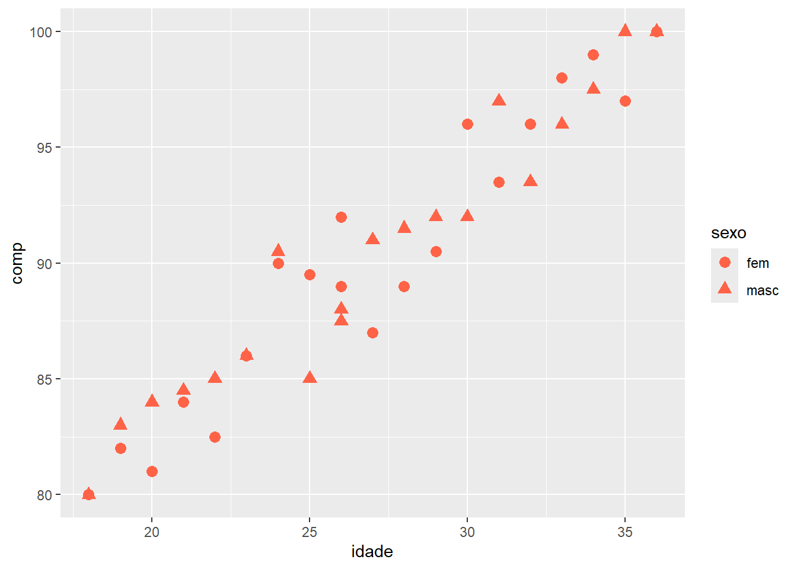
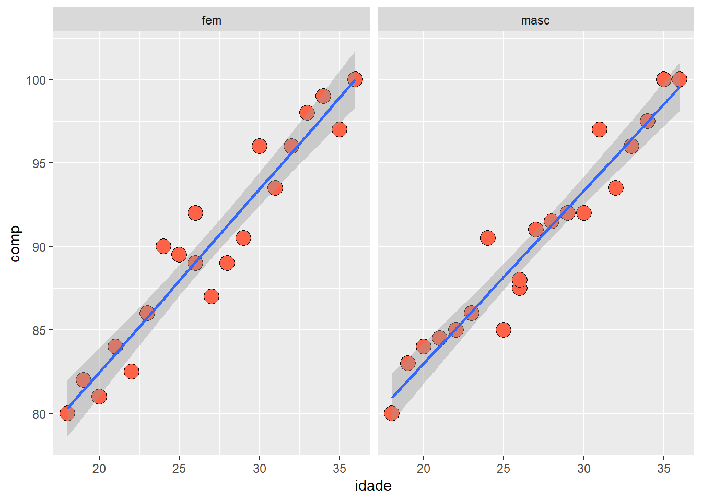
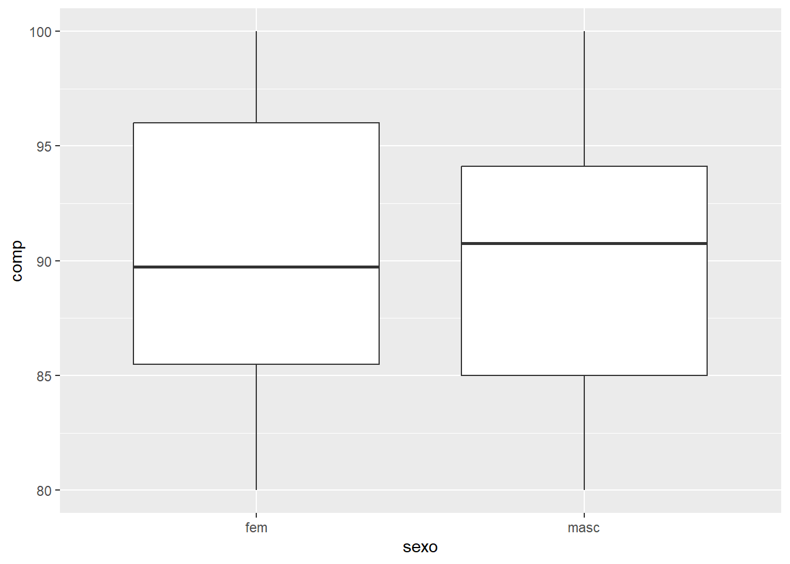
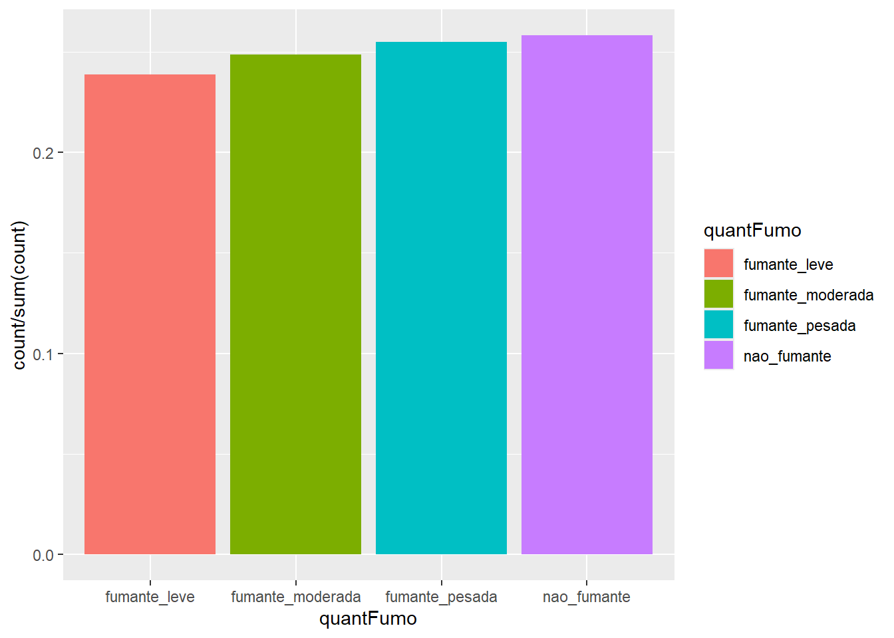
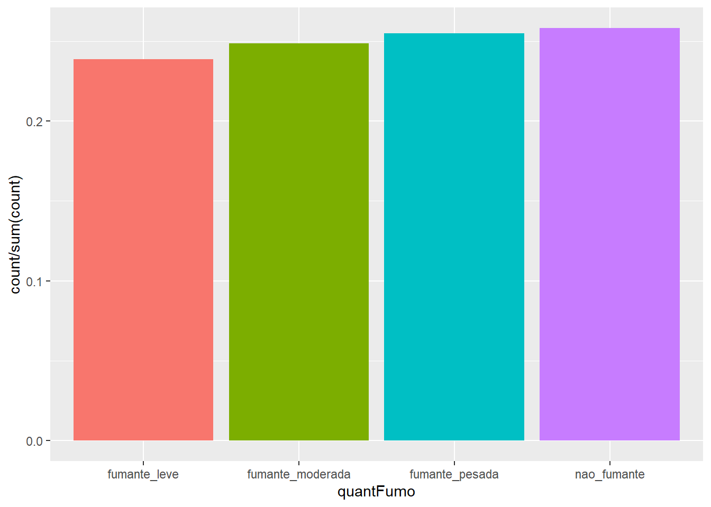
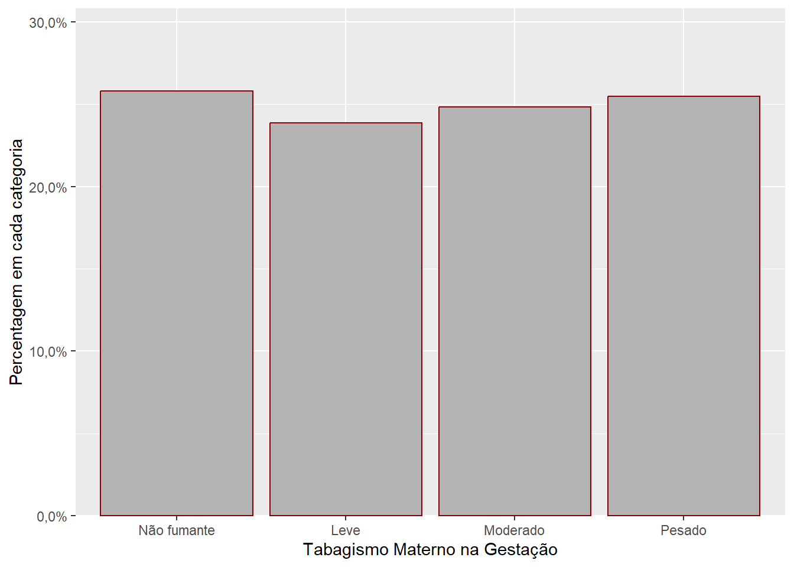

pacman::p_load(dplyr,
DescTools,
ggplot2,
ggpubr,
ggsci,
grDevices,
Hmisc,
kableExtra,
knitr,
plotrix,
readxl,
scales)6 Descrevendo os dados
Nos relatórios ou artigos científicos, a comunicação dos resultados é feita através da combinação de medidas resumidoras e visualização dos dados por meio de tabelas e gráficos.
6.1 Pacotes necessários neste capítulo
Para trabalhar neste capítulo, serão necessários os seguintes pacotes.
6.2 Dados brutos
Habitualmente, costuma-se armazenar os dados em bancos de dados (dataframes ou tibbles). Entretanto, eles estão registrados de forma aleatória e não classificada. Ao se visualizar um dataframe, é difícil responder perguntas em relação a qualquer variável, principalmente, em grandes banco de dados. Eles se constituem uma lista, um rol de valores colocados na ordem em que foram obtidos. Parecem um jogo de quebra cabeça antes de serem organizados e resumidos (Figura 6.1)! São denominados de dados brutos ou, também, de dados não agrupados.

6.3 Medidas resumidoras
6.3.1 Dados usados nesta seção
Para a demonstração prática será usado um conjunto de dados que é uma amostra aleatória de 15 recém-nascidos do banco de dados dadosMater.xlsx (ver Seção 5.3), extraída com a função slice_sample() do pacote dplyr. Cada vez que este comando for reproduzido, retornará uma nova série de 15 valores diferentes do anterior. Para tornar o código reproduzível, retornando o mesmo conjunto de valores, deve-se usar uma “semente” (seed), usando a função set.seed(), cujo argumento é um número que identificará a série gerada. Após extrair a amostra, serão selecionadas as variáveis usadas nesta seção. A amostra será atribuída a um objeto denominado, dados:
set.seed(1234)
dados <- readxl::read_excel("dados/dadosMater.xlsx") %>%
filter(ig>= 37 & ig<42) %>%
select(idadeMae, anosEst, pesoRN, apgar1) %>%
slice_sample(n=15)
str(dados) tibble [15 × 4] (S3: tbl_df/tbl/data.frame)
$ idadeMae: num [1:15] 23 26 18 25 35 19 20 23 26 35 ...
$ anosEst : num [1:15] 5 9 7 10 11 9 10 11 4 5 ...
$ pesoRN : num [1:15] 3190 3715 2555 3795 2970 ...
$ apgar1 : num [1:15] 9 7 9 6 8 8 8 8 9 9 ...Após a manipulação dos dados, tem-se um tibble de 15 linhas e quatro colunas.
6.3.2 Introdução
Sempre que se está diante de um novo conjunto de dados para analisar, uma das primeiras tarefas é encontrar maneiras de resumir os dados de forma compacta e fácil de entender. Este processo se constitui na estatística descritiva que compreende métodos de tabulação, gráficos e resumo dos dados. Nesta seção, serão verificadas as medidas de resumo dos dados de duas maneiras:
- Primeiro, um valor em torno do qual os dados têm uma tendência para se reunir ou se agrupar, denominado de medida sumária de localização ou medida de tendência central.
- Em segundo lugar, um valor que mede o grau em que os dados se dispersam, denominado de medida de dispersão ou variabilidade
6.3.3 Medidas de tendência central
6.3.3.1 Média
A média ( \(\overline{x}\) ) é a mais usada medida de tendência central para representar um valor típico dentro de um conjunto de números. O conceito mais comum é a média aritmética, que se calcula somando todos os valores do conjunto e dividindo pelo número total de elementos. A média é mais adequada para medidas numéricas simétricas, pois ela é sensível aos valores extremos (outliers).
\[ \overline{x}= \frac{\sum(x_1 + x_2 + x_3 + ... + x_n)}{n} \]
O R base possui uma função para o cálculo da média, mean(), apresentada na Seção 4.8, onde foi mostrado os seus argumentos. Se a variável analisada contiver algum valor ausente (missing), deve-se usar o argumento na.rm = TRUE, para removê-los, pois, caso contrário, a função retorna um resultado como NA (Not Available). Para evitar transtornos, recomenta-se usar sempre o argumento.
mean (dados$pesoRN, na.rm = TRUE)[1] 3307.667Para reduzir o número de dígitos decimais, na saída do resultado, pode-se colocar a função mean(), dentro da função round()1, atribuindo o resultado da função a um objeto, por exemplo media.
media <- round(mean (dados$pesoRN, na.rm = TRUE), 1)
print(media)[1] 3307.7Ou, usar a função round(), separadamente:
media <- mean (dados$pesoRN, na.rm = TRUE)
round(media, 1)[1] 3307.76.3.3.2 Mediana
A mediana (Md) representa o valor central em uma série ordenada de valores. Assim, metade dos valores será igual ou menor que o valor mediano e a outra metade igual ou maior do que ele. Para encontrar a média:
- Ordene o conjunto de dados, por exemplo, a variável
dados$pesoRN:
valores_ordenados <- sort(dados$pesoRN)
print(valores_ordenados) [1] 2285 2555 2965 2970 3185 3190 3220 3500 3570 3585 3645 3710 3715 3725 3795Se o número de valores no conjunto de dados for ímpar, a mediana é o valor do meio. No exemplo, tem-se 15 valores, onde o valor do meio é o 7º valor e, portanto, a mediana é igual a 3220 g.
Se o número de valores no conjunto de dados for par, a mediana é a média dos dois valores do meio. Apenas como exemplo, para se obter um número par de valores, será eliminado o 15º valor da variável
dados$pesoRN:
valores_ordenados_pares <- valores_ordenados [-15]
print(valores_ordenados_pares) [1] 2285 2555 2965 2970 3185 3190 3220 3500 3570 3585 3645 3710 3715 3725Assim, a mediana será igual a média do 7º e 8º e igual a 3360 g.
É bem fácil de se calcular a mediana quando o número de observações é pequeno. Entretanto, quando se tem um número grande de valores seria extremamente tedioso esse calculo. O R facilita esse trabalho, fornecendo a função median().
Agora, será usada a variável apgar1 do arquivo dadosMater.xlsx. Como o Apgar é um escore, a medida resumidora mais adequada, realmente, é a mediana.
mater <- readxl::read_excel("dados/dadosMater.xlsx") %>%
filter(ig>= 37 & ig<42) %>%
select(idadeMae, anosEst, pesoRN, apgar1)
median (mater$apgar1, na.rm = TRUE)[1] 86.3.3.3 Moda
Moda (Mo) é o valor que ocorre com maior frequência em um conjunto de dados. O R não possui uma função nativa e direta para calcular a moda como tem para a média (mean()) e a mediana (median()). Isso acontece porque a moda pode não ser única em um conjunto de dados (podem existir múltiplos valores com a mesma frequência máxima) ou pode nem existir (se todos os valores ocorrerem apenas uma vez).Tem o menor nível de sofisticação. No entanto, pode-se facilmente criar uma função própria para calcular a moda ou usar pacotes que oferecem essa funcionalidade, como o DescTools que oferece uma função chamada Mode(). Aqui estão algumas maneiras de calcular a moda em R:
Função personalizada
moda <- function(v) {
freq_tab <- table(v)
max_freq <- max(freq_tab)
moda <- names(freq_tab[freq_tab == max_freq])
return(moda)
}Esta função moda()é constituída por:
- table(v): Cria uma tabela de frequência dos valores v.
- max(freq_tab): Encontra a frequência máxima.
- freq_table[freq_table == max_freq]: Seleciona as entradas da tabela de frequência que são iguais à frequência máxima.
- names(…): Obtém os nomes (os valores originais) dessas entradas, que são as modas.
Usando a função criada, a moda da variável dados$apgar1 é igual a:
moda (dados$apgar1) [1] "8"A função moda() pode ser salva em seu diretório de trabalho, na pasta das suas funções próprias. Quando necessário ela pode ser acessada, como foi visto na Seção 4.8.1).
Função Mode() do pacote DescTools
moda <- Mode(dados$apgar1)
print(moda)[1] 8
attr(,"freq")
[1] 7A saída mostra que a média é igual a 8 e que frequência deste valor entre os 15 valores é 7.
6.3.3.4 Quantil
Uma medida de localização bastante utilizada são os quantis que são pontos estabelecidos em intervalos regulares que dividem a amostra em subconjuntos iguais. Se estes subconjuntos são em número de 100, são denominados de percentis; se são em número de 10, são os decis e em número de 4, são os quartis. A função nativa no R para obter o quantil é quantile().
Para determinar os três quartis do peso dos recém-nascidos (dados$pexoRN), usa-se:
quantile (dados$pesoRN, c (0.25, 0.50, 0.75)) 25% 50% 75%
3077.5 3500.0 3677.5 Observe que o percentil 50º é igual a mediana. O percentil 75º é o ponto do conjunto de dados onde 75% dos recém-nascidos têm um peso inferior a 3677.5g e 25% está acima deste valor.
6.3.3.5 Média aparada
As médias aparadas são estimadores robustos da tendência central. Para calcular uma média aparada, é removida uma quantidade predeterminada de observações em cada lado de uma distribuição e realizada a média das observações restantes. Um exemplo de média aparada é a própria mediana.
A base R tem como calcular a média aparada acrescentando o argumento trim =, proporção a ser aparada. Se for aparado 20%, usa-se trim = 0.2. isto significa que serão removidos 20% dos dados dos dois extremos. No caso da amostra de 15 recém-nascidos, serão removidos três valores mais baixos e três valores mais altos, passando a mostra a ter 9 valores, e a média aparada será a média destes 9 valores.
O comando para obter a média aparada é:
round(mean (dados$pesoRN, na.rm = TRUE, trim = 0.20), 1)[1] 3397.26.3.4 Medidas de Dispersão
6.3.4.1 Amplitude
A amplitude de um grupo de medições é definida como a diferença entre a maior observação e a menor.
No conjunto de dados dos pesos dos recém-nascidos, a amplitude pode ser obtida, no R, com a função range(), que retorna o valor mínimo e o máximo.
range (dados$pesoRN, na.rm = TRUE)[1] 2285 37956.3.4.2 Intervalo Interquartil
A intervalo interquartil (IIQ), também conhecido como amplitude interquartil (AIQ) é uma forma de média aparada. É simplesmente a diferença entre o terceiro e o primeiro quartil, ou seja, a diferença entre o percentil 75 e o percentil 25. Considere a variável escolaridade (dados$anosEst), anos de estudos completos.
Os percentis 25 e 75 são obtidos, usando a função quantile(), vista acima, ou com a função summary() , que retorna os valores mínimo, primeiro quartil, mediana, média, terceiro quartil e máximo.
quantile (dados$anosEst, c(0.25,0.75)) 25% 75%
6.5 11.0 summary(dados$anosEst) Min. 1st Qu. Median Mean 3rd Qu. Max.
4.000 6.500 9.000 8.467 11.000 11.000 Portanto, o IIQ está entre 6,5 a 11 anos de estudo ou, 11 – 6,5 = 4,5 anos de estudos completos. Em outras palavras, 50% das mulheres desta amostra têm de 6 a 8 anos de estudo.
O R possui uma função específica para calcular o intervalo interquartil, denominada IQR() e incluída no R base. Ela possui os seguintes argumentos:
x \(\to\) Representa o vetor numérico;
na.rm \(\to\) Este assume um valor lógico, TRUE ou FALSE, indicando se os valores ausentes devem ser removidos ou não;
type \(\to\) Representa um número inteiro selecionando um dos muitos algoritmos de quantil. Este é um parâmetro opcional.
IQR(dados$anosEst, na.rm = TRUE)[1] 4.56.3.4.3 Variância e Desvio Padrão
A variância e o desvio padrão fornecem uma indicação de quão aglomerados em torno da média os dados de uma amostra estão. Estes tipos de medidas representam desvios (erros)da média. Quando se verifica o desvio de cada valor (x) em relação à média \(\overline{x}\), os desvios positivos se anulam com os negativos, resultando em uma soma igual a zero.
A consequência deste fato é que não é possível resumir os desvios numa única medida de variabilidade. Para se chegar a uma medida de variabilidade há necessidade de se eliminar os sinais, antes de somar todos os desvios em relação à média.
Uma maneira de se fazer isso é elevar todas as diferenças ao quadrado. Assim, se obtém o desvio em relação à média elevado ao quadrado. A soma destes valores é denominada de Soma dos Quadrados (SQ) dos Desvios ou Soma dos Erros ao Quadrado. Se o interesse é apenas saber o erro ou desvio médio, divide-se por n (tamanho da amostra). No entanto, em geral o interesse se concentra em usar o desvio ou erro na amostra para estimar o erro na população. Dessa maneira, divide-se a Soma dos Quadrados por \(n-1\). Essa medida é conhecida como variância (\(s^2\)). O divisor, \(n – 1\), é denominado de graus de liberdade (gl) associados à variância.
Os graus de liberdade representam o número de desvios que estão livres para variar. É um conceito de difícil explicação, mas é possível compreendê-lo, usando a seguinte explicação:
Suponha uma maternidade há 50 anos atrás, quando não havia alojamento conjunto. Nessa época era comum os recém-nascidos normais ficarem em um berçário. A cada horário de amamentação eles eram levados para os quartos de suas mães para mamar. Posteriormente, eram trazidos para o berçário e colocados nos berços até a próxima mamada. Suponha que, em um determinado momento, havia 15 bebês e que, no berçário, existiam 15 berços (postos) para colocá-los durante o intervalo das mamadas. Quando o primeiro recém-nascido chega, a enfermeira poderá escolher qualquer um dos berços para o colocar. Depois, quando o próximo recém-nascido chegar, ela terá 14 opções de escolha, pois um dos berços está ocupado. Ainda existe uma boa liberdade de escolha. No entanto, à medida que os recém-nascidos forem sendo trazidos para o berçário, chegará a um ponto em que 14 berços estarão ocupados. Agora, a enfermeira não terá liberdade de escolha, pois só resta um berço. Nesse exemplo existem 14 graus de liberdade. Para o último recém-nascido não houve liberdade de escolha (1). Portanto, os graus de liberdade são iguais ao tamanho da amostra menos um (\(n-1\)).
A variância é a razão entre a soma dos quadrados e os graus de liberdade (observações realizadas menos um).
\[ s^2= \frac{\sum(x_i - \overline{x})^2}{n-1} \]
No R existem embutidas as funções sd() e var()que facilmente calculam essas medidas de dispersão.
Usando a variável dados$pesoRN, tem-se:
var(dados$pesoRN, na.rm =TRUE)[1] 208310.2O desvio padrão é a raiz quadrada da variância: \(s = \sqrt var\)
sqrt (var(dados$pesoRN))[1] 456.4102Ou, usando a função sd() e arredondando para 1 dígito decimal:
round(sd (dados$pesoRN, na.rm = TRUE), 1)[1] 456.4A variância e desvio padrão são medidas de variabilidade e revelam quão bem a média representa os dados. Informa se ela está funcionando bem como modelo. Pequenos desvios padrão mostram que existe pouca variabilidade nos dados, que eles se aproximam da média. Quando existe um grande desvio padrão, a média não é muito precisa para representar os dados.
O desvio padrão, além de medir a precisão com que a média representa os dados, também informa sobre o formato dos dados e por isso é uma medida de dispersão. Em uma amostra onde desvio padrão é pequeno, os dados se agrupam próximo a média e o formato da distribuição fica mais pontiagudo (curva em azul, Figura 6.2). Nesse caso a média representa bem os dados. Em outra amostra, com a mesma média anterior, mas com os dados mais dispersos entorno da média, o desvio padrão é maior e o formato da distribuição fica achatado (curva verde, na Figura Figura 6.2). Nesse caso a média não é uma boa representação dos dados.

6.3.4.4 Coeficiente de Variação
O desvio padrão por si só tem limitações. Um desvio padrão igual a 2 pode ser considerado pequeno para um conjunto de valores cuja média é 100. Entretanto, se a média for 5, ele se torna muito grande. Além disso, o desvio padrão por ser expresso na mesma unidade dos dados, não permite aplicá-lo na comparação de dois ou mais conjunto de dados que têm unidades diferentes. Para eliminar essas limitações, é possível caracterizar a dispersão ou variabilidade dos dados em termos relativos, usando uma medida denominada Coeficiente de Variação (CV), também conhecido como como Desvio Padrão Relativo ou Coeficiente de Variação de Pearson. É expresso, em geral como uma porcentagem, sendo definido como a razão do desvio padrão pela média:
\[ CV = \frac{s}{\overline{x}} \]
Multiplicando o valor da equação por 100 tem-se o CV percentual. O R não possui uma função específica para calcular o CV.
Foi criada uma função específica para isso,já multiplicada por 100.
coef_var <- function (valores) {
(sd(valores, na.rm=TRUE) / mean(valores, na.rm=TRUE))*100}Portanto, o CV da variável dados$pesoRN é igual a:
round (coef_var (dados$pesoRN),1)[1] 13.8Usdando outra variável do banco de dados, por exemplo, dados$idadeMae, o CV será igual a:
round(coef_var (dados$idadeMae), 1)[1] 21.4O peso do recem-nascido tem um CV = 13.8 % e a idade materna um CV = 21.4 %, mostrando que esta tem uma maior variabilidade. Quanto menor o desvio padrão, menor o CV e, consequentemente, menor a variabilidade. Um CV \(\ge\) 50%, sugere que a variável tem uma distribuição assimétrica.
6.3.5 Escolha da medida resumidora
A seleção da medida de tendência central mais adequada depende de vários fatores, incluindo a natureza dos dados e do propósito da sumarização.
O tipo da variável tem substancial influência na escolha da medida de tendência central a ser usada. A moda é mais apropriada para dados nominais e seu uso com variáveis ordinais resulta em uma perda no poder em termos de informação que se poderia obter dos dados.
A mediana é mais adequada para variáveis ordinais, embora possa ser usada para variáveis contínuas, especialmente quando a distribuição dos dados é assimétrica. A mediana não deveria ser usada com dados nominais porque os postos assumidos não podem ser obtidos com dados de nível nominal.
Finalmente, a média somente deve ser usada com dados contínuos simétricos, se houver assimetria a mediana deve ser preferida.
As medidas de dispersão devem estar associadas a uma medida de tendência central. Elas caracterizam a variabilidade dos dados na amostra. Com dados ordinais usar a amplitude ou o intervalo interquartil. O desvio padrão não é apropriado em dados ordinais devido à natureza não numérica destes.
Com os dados numéricos deve-se usar o desvio padrão, que utiliza toda a informação nos dados, ou o intervalo interquartil (IIQ). Quando os dados forem simétricos, usar a média acompanhada do desvio padrão, caso contrário, usar a mediana e o IIQ. Não misturar e combinar medidas (2).
6.4 Tabelas
A apresentação tabular dos dados é a apresentação das informações por meio de tabelas. Uma tabela é uma forma eficiente de mostrar os dados levantados, facilitando a sua compreensão e interpretação. No R existem muitas maneira de criar tabelas.
6.4.1 Dados usados nesta seção
Para mostrar como construir uma tabela, será feita novamente a leitura do conjunto de dados dadosMater.xlsx. Como visto, este conjunto de dados contém uma grande quantidade colunas e, para tornar mais fácil a análise, serão selecionadas aquelas utilizadas nesta seção.
mater <- readxl::read_excel("dados/dadosMater.xlsx") %>%
select(idadeMae, altura, peso, anosEst, fumo,
para, ig, sexo, pesoRN, compRN, utiNeo)
str(mater)tibble [1,368 × 11] (S3: tbl_df/tbl/data.frame)
$ idadeMae: num [1:1368] 42 29 19 31 34 29 30 34 17 32 ...
$ altura : num [1:1368] 1.65 1.66 1.72 1.55 1.6 1.5 1.54 1.63 1.68 1.5 ...
$ peso : num [1:1368] 69.9 78 81 74 60 60 75.5 61 57 70 ...
$ anosEst : num [1:1368] 3 11 9 5 7 8 4 6 10 1 ...
$ fumo : num [1:1368] 2 2 2 2 2 1 1 2 2 2 ...
$ para : num [1:1368] 5 0 0 1 2 1 2 1 0 4 ...
$ ig : num [1:1368] 29 33 33 33 33 33 33 33 34 34 ...
$ sexo : num [1:1368] 2 2 2 2 2 2 2 2 2 2 ...
$ pesoRN : num [1:1368] 1035 2300 1580 1840 2475 ...
$ compRN : num [1:1368] 35.5 45 39 41 47 41 44 44 47 48 ...
$ utiNeo : num [1:1368] 1 2 1 1 1 1 2 2 1 1 ...6.4.2 Tabelas de Frequência
6.4.2.1 Tabela de frequência para dados categóricos
Uma maneira concisa que permite observar a variável e extrair informação sobre o seu comportamento, é a utilização de uma tabela de frequência. A tabela de frequência deve ser simples, clara e objetiva, ou seja, não deve ter um volume muito grande de informações. Deve ser autoexplicativa, não deve haver necessidade de ler o texto para entendê-la.
A tabela de frequência agrupa os dados por categorias ou classes, contabilizando o número ocorrências em cada categoria. O número de observações em uma determinada classe recebe o nome de frequência absoluta (f). Além da frequência absoluta, costuma aparecer a frequência relativa (fr) que representa a proporção da classe em relação ao número total de observações (n), calculada por \(fr = \frac{f}{n}\), a frequência percentual (fp), obtida pela multiplicação da frequência relativa por 100 e a frequência acumulada, que é a soma de todas as classes até a classe atual, podendo ser frequência acumulada absoluta (F), frequência acumulada relativa (Fr) ou frequência acumulada percentual (Fp).
Em uma tabela, os dados são apresentados em colunas verticais indicadoras e linhas horizontais. Nas linhas aparecem as categorias e nas colunas as frequências, constituindo o corpo da tabela. O cabeçalho indica a natureza do conteúdo de cada coluna. No cruzamento das colunas e das linhas, tem-se as caselas ou casas.
Existem algumas recomendações na construção de uma tabela de frequência (3):
- Deve ter um título na parte superior que responda as perguntas: “o que? quando? onde?” relativas ao fato estudado;
- Deve ter um rodapé, na parte inferior da tabela, onde se coloca notas necessárias e a fonte dos dados;
- As colunas externas da tabela devem ser abertas, o emprego de linhas verticais para a separação das colunas no corpo da tabela é opcional;
- Na parte superior e inferior, as tabelas devem, ser fechadas por linhas horizontais;
- Nenhuma casela deve ficar vazia, apresentando um número ou um símbolo. Se não se dispuser do dado, colocar reticências … e a presença de um X representa que o dado foi omitido para evitar a identificação.
Se os dados forem nominais, a ordenação das categorias é arbitrária, costuma-se colocar em primeiro lugar a maior frequência (Tabela 6.1) , colocando-os em categorias ordenadas (4).
| Droga | f | fr | fp (%) | Fp (%) |
|---|---|---|---|---|
| Nenhuma | 904 | 0.955 | 95.5 | 95.5 |
| Medicamentos | 23 | 0.024 | 2.4 | 97.9 |
| Álcool | 17 | 0.018 | 1.8 | 99.7 |
| Crack | 2 | 0.002 | 0.2 | 99.9 |
| Cocaína | 1 | 0.001 | 0.1 | 100 |
| Total | 947 | 1.000 | 100.0 |
6.4.2.2 Construção da tabela de frequência
Para demonstrar como construir uma tabela de frequência, será usada uma variável categórica que não existe no conjunto de dados mater. Esta variável vai ser criada, categorizando a variável numérica idadeMae (idade da parturiente) em três categoria, classicamente, usadas: menores de 20 anos (adolescentes), 20 a 35 anos e maiores de 35 anos. No conjunto mater, a variável idadeMae tem como idade mínima 13 anos e idade máxima 46 anos. A nova variável receberá o nome de categIdade. Para realizar este trabalho de transformação da variável numérica em categórica, será usada a função mutate() do pacote dplyr (veja Seção 5.3.3). Esta função tem vários argumentos:
mater <- mater %>%
mutate(categIdade = case_when(
idadeMae < 20 ~ "< 20 anos",
idadeMae >= 20 & idadeMae <= 35 ~ "20 a 35 anos",
idadeMae > 35 ~ "> 35 anos")) %>%
mutate(categIdade = factor(categIdade, levels = c("< 20 anos", "20 a 35 anos", "> 35 anos")))Para visualizar se a variável foi criada de maneira adequada, pode-se usar novamente a função str():
str(mater)tibble [1,368 × 12] (S3: tbl_df/tbl/data.frame)
$ idadeMae : num [1:1368] 42 29 19 31 34 29 30 34 17 32 ...
$ altura : num [1:1368] 1.65 1.66 1.72 1.55 1.6 1.5 1.54 1.63 1.68 1.5 ...
$ peso : num [1:1368] 69.9 78 81 74 60 60 75.5 61 57 70 ...
$ anosEst : num [1:1368] 3 11 9 5 7 8 4 6 10 1 ...
$ fumo : num [1:1368] 2 2 2 2 2 1 1 2 2 2 ...
$ para : num [1:1368] 5 0 0 1 2 1 2 1 0 4 ...
$ ig : num [1:1368] 29 33 33 33 33 33 33 33 34 34 ...
$ sexo : num [1:1368] 2 2 2 2 2 2 2 2 2 2 ...
$ pesoRN : num [1:1368] 1035 2300 1580 1840 2475 ...
$ compRN : num [1:1368] 35.5 45 39 41 47 41 44 44 47 48 ...
$ utiNeo : num [1:1368] 1 2 1 1 1 1 2 2 1 1 ...
$ categIdade: Factor w/ 3 levels "< 20 anos","20 a 35 anos",..: 3 2 1 2 2 2 2 2 1 2 ...Para se verificar como ficou a distribuição de frequência absoluta, constrói-se uma tabela, inicialmente com a função table():
f_abs <- table (mater$categIdade)
f_abs
< 20 anos 20 a 35 anos > 35 anos
219 992 157 As frequências relativas podem ser obtidas com a função prop.table(), Esta função será usada dentro da função round() para arredondar os valores para 3 dígitos.
f_rel <- round(prop.table(f_abs), 3)
f_rel
< 20 anos 20 a 35 anos > 35 anos
0.160 0.725 0.115 Multiplicando por 100 a f_rel, tem-se a frequência percentual f_perc. De novo, a operação será colocada dentro da função round(), arredondando o resultado para dois dígitos.
f_perc <- round(f_rel*100, 2)
f_perc
< 20 anos 20 a 35 anos > 35 anos
16.0 72.5 11.5 Para construir uma tabela simples no R, pode-se proceder da seguinte maneira:
# Criando as colunas das tabelas com o total de cada uma delas
f_abs <- c (f_abs, sum(f_abs))
f_rel <- c (f_rel, sum (f_rel))
f_perc <- c (f_perc, sum (f_perc))
# Criando a tabela inicial com a concatenação das coluna, usando a função cbind()
tab1 <- cbind(f_abs,
f_rel ,
f_perc)
tab1 f_abs f_rel f_perc
< 20 anos 219 0.160 16.0
20 a 35 anos 992 0.725 72.5
> 35 anos 157 0.115 11.5
1368 1.000 100.0Transformando a tab1 em um dataframe, nomeando a linha 4 e renomeando as colunas para que tenham os nomes mencionados no início da seção:
tab1 <- as.data.frame(tab1)
row.names(tab1)[4] <- "Total"
colnames(tab1) <- c("f", "fr (%)", "fp (%)")
tab1 f fr (%) fp (%)
< 20 anos 219 0.160 16.0
20 a 35 anos 992 0.725 72.5
> 35 anos 157 0.115 11.5
Total 1368 1.000 100.0Esta uma tabela simples que serve para visualizar as informações. Não serve para publicações. Para obter uma tabela simples, mas muito mais profissional (Tabela 6.2) pode ser utilizada a função kable() do pacote knitr (5). Esta função possui um grande número de argumentos para personalizar a aparência das tabelas2:
knitr::kable(tab1,
format = "html",
col.names = c("Faixa Etária", "f", "fr", "fp (%)"),
align = c('l', 'c', 'c', 'c')) %>%
kableExtra::kable_styling(
bootstrap_options = c("striped", "hover", "condensed"),
full_width = FALSE,
position = "left",
font_size = 12) %>%
kableExtra::column_spec(1, width = "4cm") %>%
kableExtra::column_spec(2:4, width = "1.5cm")| Faixa Etária | f | fr | fp (%) |
|---|---|---|---|
| < 20 anos | 219 | 0.160 | 16.0 |
| 20 a 35 anos | 992 | 0.725 | 72.5 |
| > 35 anos | 157 | 0.115 | 11.5 |
| Total | 1368 | 1.000 | 100.0 |
6.4.2.3 Tabela de frequência para dados numéricos
Como fazer a distribuição de frequência de uma variável contínua sem um critério pré-determinado para as classes?
Como exemplo, será usado, agora, o IMC pré-gestacional das parturientes do banco de dados dadosMater.xlsx). Esta variável ainda não existe no banco de dados, tem-se apenas o peso e a altura e, portanto, com estes dados, ela pode ser criada:
mater$imc <- round(mater$peso/mater$altura^2, 1)
str(mater)tibble [1,368 × 13] (S3: tbl_df/tbl/data.frame)
$ idadeMae : num [1:1368] 42 29 19 31 34 29 30 34 17 32 ...
$ altura : num [1:1368] 1.65 1.66 1.72 1.55 1.6 1.5 1.54 1.63 1.68 1.5 ...
$ peso : num [1:1368] 69.9 78 81 74 60 60 75.5 61 57 70 ...
$ anosEst : num [1:1368] 3 11 9 5 7 8 4 6 10 1 ...
$ fumo : num [1:1368] 2 2 2 2 2 1 1 2 2 2 ...
$ para : num [1:1368] 5 0 0 1 2 1 2 1 0 4 ...
$ ig : num [1:1368] 29 33 33 33 33 33 33 33 34 34 ...
$ sexo : num [1:1368] 2 2 2 2 2 2 2 2 2 2 ...
$ pesoRN : num [1:1368] 1035 2300 1580 1840 2475 ...
$ compRN : num [1:1368] 35.5 45 39 41 47 41 44 44 47 48 ...
$ utiNeo : num [1:1368] 1 2 1 1 1 1 2 2 1 1 ...
$ categIdade: Factor w/ 3 levels "< 20 anos","20 a 35 anos",..: 3 2 1 2 2 2 2 2 1 2 ...
$ imc : num [1:1368] 25.7 28.3 27.4 30.8 23.4 26.7 31.8 23 20.2 31.1 ...A variável imc foi criada de forma adequada. Após, isso, para verificar a sua distribuição, segue-se os seguintes passos:
- Estabelecimento do número de classes (k):
Antes, as classes foram estabelecidas de acordo com algum critério. Em geral, quando não há um padrão pré-determinado, o número de classes é estabelecido de acordo com o tamanho da amostra. Este número pode ser escolhido lembrando-se das oscilações que ocorrem nos dados e do interesse do pesquisador em mostrar seus dados. Não existe uma regra totalmente eficiente para determinar o número de classes. É importante ter bom senso, de maneira que seja possível ver como os valores se distribuem.
Para a maioria dos dados, é recomendado e 8 a 20 classes, isto é, 8 \(\le\) k \(\le\) 20. Com poucas classes, perde-se precisão e, com muitas classes, a tabela torna-se muito extensa. Baseado na regra de Sturges , é sugerido usar a recomendação da Figura 6.3 (7).

Para a variável imc, como existem 1368 observações, deve-se usar ao redor de 10 classes. Executando a função nclass.Sturges (), abaixo, o número de classes é igual a:
k <- nclass.Sturges (mater$imc)
k[1] 12- Amplitude e limites das classes:
A classe possui um limite inferior e um limite superior. O importante é que os limites dos intervalos sejam mutuamente exclusivos, isto é, cada valor deve ser representado em um único intervalo. Além disso, os intervalos devem ser exaustivos, isto é, devem conter todos os valores possíveis entre o valor mínimo e o máximo. O recomendado é que as classes sejam homogêneas, ou seja, tenham a mesma amplitude. A amplitude dos valores pode ser obtida com a função range():
amplitude <- range(mater$imc)
amplitude [1] 11.8 48.7Usando esta amplitude dos dados, é possível ter a largura (amplitude) das classes (h), usando a diferença entre o mínimo e máximo e divdindo pelo número de classes (k):
h <- round(diff(amplitude)/k, 0)
h[1] 3A fórmula é apenas a diferença absoluta dos limites inferior e superior dividida pelo número de classes, arredondado com o a função round ().
A partir desses dados, é possível construir as classes. A primeira classe será o valor mínimo de 11,8 e máximo 14,8 (11,8 + 3) exclusive; a segunda classe será 14,8 até 17,8 (14,8 + 3) e assim por diante.
- Construção da tabela:
Pode-se construir a tabela, usando a função mutate() e dentro desta a função cut()e dentro dela a função seq(limite inferior, limite superior, length.out = k + 1). A função cut() tem vários argumentos:
- x \(\to\) vetor numérico
- breaks \(\to\) vetor numérico de dois ou mais pontos de corte exclusivos ou um único número (maior ou igual a 2) dando o número de intervalos nos quais x deve ser subdividido
- labels \(\to\) rótulos para os níveis das categorias resultante. Por padrão, os rótulos são construídos usando a notação de intervalo (a,b] - aberto à esquerda e fechado à direita.
- include.lowest \(\to\) valor lógico, se o menor valor (ou o maior, se
right = TRUE) será incluido. Padrão =include.lowest=TRUE. - right \(\to\) valor lógico indicando se o intervalo deve ser fechado à direita e aberto a esquerda. Padrão =
right = TRUE. - ordered_result \(\to\) valor lógico indicando se o resultado deve ser um fator ordenado.
mater <- mater %>%
mutate(categImc = cut(
imc,
breaks = seq(11.8, 48.7, length.out = 13), # 12 intervalos definidos
include.lowest = TRUE,
ordered_result = TRUE))
table(mater$categImc)
[11.8,14.9] (14.9,18] (18,21] (21,24.1] (24.1,27.2] (27.2,30.3]
2 46 258 480 237 176
(30.3,33.3] (33.3,36.4] (36.4,39.5] (39.5,42.6] (42.6,45.6] (45.6,48.7]
87 39 22 12 5 4 Preste atenção! Estes comandos que vão gerar a tabela têm o argumento right = TRUE (padrão). Neste caso, os símbolos aparecem como (] (na tabela) e significa que o limite inferior da classe foi excluído (aberto à esquerda) e o superior foi incluído (fechado à direita). Aqui, também foi introduzido o argumento include.lowest = TRUE para incluir o valor mínimo dos dados (11,8), e a representação gráfica fica [].
Olhando a saída do objeto categImc, ela parece pouco esclarecedora e, no caso do IMC, talvez fosse melhor usar outro critério. Como por exemplo o que define o estado nutricional no 1° trimestre de gestação e classifica as gestantes em:
- baixo peso (IMC \(<\) 18,5 kg/\(m^2\)),
- peso adequado (18,5 \(\le\) IMC \(\le\) 24,9 kg/\(m^2\)),
- sobrepeso (25,0 \(\le\) IMC \(\le\) 29,9 kg/\(m^2\)) e
- obesidade (IMC \(\ge\) 30 kg/\(m^2\)).
Assim, é recomendado um ganho de peso total adequado de 12,5 kg a 18 kg para as gestantes classificadas como baixo peso; de 11,5 kg a 16,0 kg para as classificadas como peso adequado; de 7,0 a 11,5 kg nas classificadas com sobrepeso; e de 5,0 a 9,0 kg nas obesas (8).
mater <- mater %>%
mutate (estNutri = case_when(
imc < 18.5 ~ "Baixo Peso",
imc >= 18.5 & imc < 25 ~ "Peso adequado",
imc >= 25 & imc < 30 ~ "Sobrepeso",
imc >= 30 ~ "Obesidade")) %>%
mutate(estNutri = factor(estNutri,
levels = c("Baixo Peso", "Peso adequado",
"Sobrepeso", "Obesidade")))Isto cria uma nova variável estNutri (estado nutricional), no conjunto de dados mater, com 4 níveis (Baixo Peso, Peso Adequado, Sobrepeso e Obesidade). Desta forma, pode-se construir uma tabela que melhor define este grupo de mulheres quanto ao estado nutricional.
f.abs <- table (mater$estNutri)
f.rel <- round(prop.table(f.abs), 3)
f.perc <- round(f.rel*100, 2)
f.abs <- c (f.abs, sum(f.abs))
f.rel <- c (f.rel, sum (f.rel))
f.perc <- c (f.perc, sum (f.perc))
tab2 <- cbind(f.abs,
f.rel ,
f.perc)
tab2 <- as.data.frame(tab2)
row.names(tab2)[5] <- "Total"
colnames(tab2) <- c("f", "fr", "fp")
tab2 f fr fp
Baixo Peso 67 0.049 4.9
Peso adequado 791 0.578 57.8
Sobrepeso 335 0.245 24.5
Obesidade 175 0.128 12.8
Total 1368 1.000 100.0Colocando em um formato mais científico, tem-se uma tabela ( Tabela 6.3)) bem mais elegante sobre o estado nutricional pré-gestacional:
knitr::kable(tab2,
format = "html",
col.names = c("Estado Nutricional", "f", "fr", "fp (%)"),
align = c('l', 'c', 'c', 'c')) %>%
kableExtra::kable_styling(
bootstrap_options = c("striped", "hover", "condensed"),
full_width = FALSE,
position = "left",
font_size = 12) %>%
kableExtra::column_spec(1, width = "4cm") %>%
kableExtra::column_spec(2:4, width = "1.5cm")| Estado Nutricional | f | fr | fp (%) |
|---|---|---|---|
| Baixo Peso | 67 | 0.049 | 4.9 |
| Peso adequado | 791 | 0.578 | 57.8 |
| Sobrepeso | 335 | 0.245 | 24.5 |
| Obesidade | 175 | 0.128 | 12.8 |
| Total | 1368 | 1.000 | 100.0 |
6.4.3 Tabelas de contingência
As tabelas de contingência, também chamadas tabelas cruzadas, são bastante usadas em estatísticas epidemiológicas para resumir a relação entre duas ou mais variáveis categóricas.
Uma tabela de contingência é um tipo especial de tabela de distribuição de frequência, onde duas variáveis são mostradas simultaneamente. Por exemplo, um pesquisador pode estar interessado em saber se o hábito de fumar na gestação aumenta o risco de o recém-nascido precisar de cuidados intensivos.
Existem duas variáveis fumo (fumo na gestação) e utiNeo (necessidade de cuidados intensivos neonatais) no banco de dados dadosMater.xlsx. Cada uma dessas variáveis tem duas alternativas, sim e não, por isso a tabela de cruzamento é denominada tabela de contingência 2 x 2. No arquivo, estão registradas como variáveis numéricas , 1 e 2, e devem ser transformadas para fatores (1 = sim e 2 = não)3, usando a função factor().
mater$fumo <- factor (mater$fumo,
ordered = TRUE,
levels = c (1,2),
labels = c ("sim", "não"))
mater$utiNeo <- factor (mater$utiNeo,
ordered = TRUE,
levels = c (1,2),
labels = c ("sim", "não"))Basta agora, usar a função with() junto com a função table(variável da linha, variável das colunas). Por convenção, costuma-se colocar a variável explicativa ou explanatória nas linhas (fumo) e o desfecho nas colunas (utiNeo):
tabFumo <- with(data = mater, table(fumo, utiNeo))
tabFumo utiNeo
fumo sim não
sim 71 230
não 204 863Para ter a soma das margens, usar a função addmargins (tabela, margin = c (1,2), FUN = sum) do pacote stats, incluído na instalação básica do R. A função adiciona a soma das linhas (1) e das colunas (2) às margens da tabela (tabFumo).
addmargins (tabFumo, margin = c(1,2), FUN = sum)Margins computed over dimensions
in the following order:
1: fumo
2: utiNeo utiNeo
fumo sim não sum
sim 71 230 301
não 204 863 1067
sum 275 1093 1368Observando a tabela de contingência, verifica-se que a proporção entre as gestantes fumantes de internação na UTI neonatal foi 71/301 = 0,236 e entre as não fumantes foi de 204/1067 = 0,191. Para verificar se esta diferença ocorreu por acaso ou ela é significativa, há necessidade de se realizar um teste de hipótese, o qui-quadrado, que será visto na ?sec-qui.
6.5 Gráficos
Para descrever os dados e visualizar o que está acontecendo, recomenda-se utilizar um gráfico adequado. O que é adequado depende principalmente do tipo de dados, bem como das características particulares do que se quer explorar. Além disso, um gráfico em um relatório sempre é um fator de “impacto”. Ou seja, pode ter um efeito positivo no leitor ou fazê-lo abandonar a leitura. Finalmente, um gráfico de frequência pode ser utilizado para ilustrar, explicar uma situação complexa onde palavras ou uma tabela podem ser confusos, extensos ou de outro modo insuficiente. Por outro lado, deve-se evitar usar gráficos onde poucas palavras expressam claramente o que se quer mostrar. Aconselha-se que, ao analisar os dados, é importante inspecioná-los como se fossem uma imagem, uma fotografia, ver como eles se parecem, qual o seu aspecto, e só então pensar em interpretar os aspectos vitais da estatística (9).
O R básico fornece uma grande variedade de funções para visualizar dados, elas de uma maneira relativamente simples permitem a construção de gráficos que facilitam a interpretação tanto de variáveis categórica como contínuas. Para gráficos mais sofisticados existe um pacote denominado ggplot2 (10). Este pacote é uma ferramenta extremamente versátil. É um pouco mais complexo e exige mais tempo para dominá-lo, mas, uma vez que se aprenda a sua lógica, oferece uma estrutura extremamente flexível para exibir os dados . Inicialmente, serão usadas as funções do R básico e,posteriormente, será feita uma introdução ao ggplot2 (Seção 6.6).
6.5.1 Gráfico de setores
Também conhecido como gráfico de pizza. Cada segmento (fatia) do gráfico de pizza deve ser proporcional à frequência da categoria que representa. A desvantagem do gráfico de pizza é que ele só pode representar uma variável, portanto, há necessidade de um gráfico separado para cada variável que se deseja representar. Além disso, um gráfico de pizza pode perder clareza se ele é usado para representar mais do que quatro ou cinco categorias. Na maioria das vezes, em um artigo ou relatório científico não há necessidade de se usar este tipo de gráfico. As tabelas são muito melhores. Segundo Edward Tufte, professor emérito de estatística, design gráfico e economia política na Universidade de Yale, o único gráfico pior do que um gráfico de pizza são vários deles (11)! Ele é usado mais no mundo dos negócios. Como regra, evite usar gráfico de pizza!
Em uma consulta, entre estudantes de Medicina, foi perguntado a sua opinião em relação a este tipo de gráfico. A pergunta feita foi: “O que você sente ao ver um gráfico de pizza em um artigo científico?” As alternativas para a resposta eram quatro (ódio, irritação, indiferença, amor). O resultado do inquérito está na Tabela 6.4.
| Sentimento | f | fr | fp (%) | Fp (%) |
|---|---|---|---|---|
| Odeiam | 6 | 0.15 | 15 | 15 |
| Não gostam | 12 | 0.30 | 30 | 45 |
| Indiferentes | 14 | 0.35 | 35 | 80 |
| Amam | 8 | 0.20 | 20 | 100 |
| Total | 40 | 1.00 | 100 | NA |
No R base, pacote graphics, existe a função pie()para obter um gráfico de setores simples. Esta função usa os seguintes argumentos basicos, consulte a ajuda do R para outras informações:
- x \(\to\) vetor numérico não negativo
- labels \(\to\) caracteres que fornecem nomes para as fatias. Para rótulos vazios ou NA (após coerção para caractere), nenhum rótulo ou linha indicadora é desenhada
- radius \(\to\) A pizza é desenhada centralizada em um quadrado cujos lados variam de -1 a +1. Se os caracteres que rotulam as fatias forem longos, pode ser necessário usar um raio menor. O padrão é 0,8.
- density \(\to\) Densidade das linhas de sombreamento, em linhas por polegada. O padrão é NULL significa que nenhuma linha de sombreamento é desenhada. Valores não positivos de densidade também inibem o desenho de linhas sombreadas
- col \(\to\) Vetor de cores a ser usado no preenchimento ou sombreamento das fatias. Se estiver faltando, um conjunto de 6 cores pastel é usado
Os valores da coluna de frequência absoluta (f) da Tabela 6.4 serão usados como o argumento x. Ele informa a área (proporção de cada fatia). Os rótulos das fatias são escritos com a função concatenar c().
pie(x = c(6, 12, 14, 8),
labels = c("Odeiam", "Não gostam", "Indiferentes", "Amam"))
As cores que aparecem na Figura 6.4 foram escolhidas pelo R, usando o seu padrão. Entretanto, elas podem ser customizadas, especificando-as pelo nome colocado entre parênteses. Por exemplo, col = "red" e se for mais de uma cor usar a função concatenar, col = c(“gray58“, “yellow4”, “cyan”, “tomato”). As cores também podem se denotadas pelo sistemas RGB ou hexadecimal. A sigla RGB representa as cores primárias em inglês (Red, Green, Blue). O código hexadecimal da cor branca é #FFFFFFF, da gray58 é #949494, da yellow4 é #999900, da cyan é #00FFFFe da tomato é #FF6347 (Figura 6.5).
pie(x = c(6, 12, 14, 8),
labels = c("Odeiam", "Não gostam", "Indiferentes", "Amam"),
col = c("gray58", "yellow4", "cyan", "tomato"))
As cores parecem “espetaculosas”, mas o objetivo foi de criticar os gráficos tipo pizza. Se o leitor quiser insistir no seu uso e com um gráfico em 3D (Figura 6.6), pode-se instalar o pacote plotrix (12) e carregar a função pie3D(). Os argumentos são praticamente os mesmos do gráfico simples. Acrescenta-se radius = 0.9 que muda o raio da pizza e explode = 0.1 que determina o afastamento das fatias (0, as mantém juntas). Além disso, como o gráfico exibe rótulos com textos muito grandes, usa-se o argumento labelcex = 1. Como qualquer função nova, basta clicar na tecla Tab, dentro da mesma, que aparece um menu com as alternativas de argumentos.
library (plotrix)
pie3D(x = c(6, 12, 14, 8),
labels = c("Odeiam", "Não gostam", "Indiferentes", "Amam"),
radius = 0.9,
explode = 0.1,
col = c("gray58", "yellow4", "cyan", "tomato"),
labelcex = 1)
6.5.2 Gráfico de barras
Os gráficos de barra exibem a distribuição (frequências) de uma variável categórica através de barras verticais ou horizontais, ou sobrepostas (13).
Assim como o gráfico de setores, o gráfico de barras é utilizado para representar a frequência absoluta ou percentual de diferentes categorias. As barras são proporcionais as frequências. A forma mais simples de solicitar um gráfico de barra no R é digitar a função barplot() do pacote básico. Esta função é específica para desenhar gráficos de barras horizontais e verticais e usa os seguintes argumentos:
- height \(\to\) um vetor ou matriz de valores que descreve as barras que constituem o gráfico;
- width \(\to\) especifica largura das barras, com padrão de 1, opcional;
- space \(\to\) a quantidade de espaço (como uma fração da largura média da barra) restante antes de cada barra. Pode ser fornecido como um único número ou um número por barra;
- beside \(\to\) argumento lógico para especificar se colunas devem ser mostradas lado a lado;
- col \(\to\) cores das barras componentes das barras, por padrão é usado grey (cinza);
- border \(\to\) cor das bordas das barras;
- … \(\to\) outros argumentos. Consulte a ajuda do R.
Para a construção do gráfico de barras simples da Figura 6.7, será utilizada a variável categIdade, anteriormente criada (Seção 6.4.2.2), a partir do conjunto de dados dadosMater.xlsx.
barplot(table(mater$categIdade))Observando a Figura 6.7, verifica-se que não existem rótulos nos eixos x e y e o eixo y tem um tamanho inferior a barra mais alta. Estes e outros problemas podem ser resolvidos modificando-se ou acrescentando outros argumentos na função barplot(). Existem vários argumentos e para conhece-los melhor pesquise no Help do RStudio. Em um gráfico de barra simples são suficientes as seguintes modificações que irão resultar na Figura 6.8:
- Para corrigir a amplitude do eixo y, existe o argumento
ylim = c(lim inf, lim sup). Na Tabela 6.2, observa-se que a frequência máxima é de 992, assim estende-se até 1000, bem próximo da frequência da categoria, acrescentandoylim = c (0,1000), separado por vírgulas de outros argumentos. - Para os rótulos se utiliza os argumentos
ylab = (“Frequência”)exlab = (“Faixa Etária”). Também, pode ser incluído um título no gráfico com o argumentomain = “Título”. Observe que os títulos estão entre aspas. - Para modificar o tamanho das letras dos eixos x e y, que estão pouco visíveis, existe o argumento
cex.lab = 1, que é o padrão. Para aumentar em 30%, por exemplo, usarcex.lab = 1.3. Os nomes tem padrãocex.names = 1,para modificar pode-se usar 1.3, 1.5, etc. Se nada for modificado, o R imprime o padrão. - Para a cor das barras, use o argumento
col = (“cor”). Escolha a cor entre as 657 opções, ou deixe o padrão cinza (grey). O argumentocol.axis = “cor”controla a cor dos valores dos eixos (veja também Seção 6.6.3). - Para modificar a borda das barras que por padrão é preta, usar o argumento
border = “cor”. Se não desejar a borda, basta colocar 0 (zero), no lugar da cor. - Para colocar as barras na posição horizontal, pode ser utilizado o argumento
horiz = TRUE. Lembrar de inverter as barras. Ou seja, a variável x passa a ser y e vice-versa. - O argumento
las = 1faz o o texto do eixo y ficar horizontal - A função
box(bty = "L"), colocada após é opcional e faz os eixos se encontraren em 0.
barplot(table(mater$categIdade),
ylim = c (0,1000),
col= "tomato",
border = "black",
ylab= "Frequência absoluta",
xlab = "Faixa etária",
cex.lab = 1.2,
las = 1)
box(bty = "L")Para que as barras fiquem horizontais como na Figura 6.9, usa-se o argumento horiz=TRUE:
barplot(table(mater$categIdade),
xlim = c (0,1000),
col= "tomato",
border = "black",
ylab= "Faixa Etária",
xlab = "Frequência absoluta",
cex.lab = 1.2,
horiz=TRUE)
box(bty = "L")Além das modificações realizadas, pode-se fazer outras para tornar o gráfico mais informativo . Por exemplo, colocar as frequência de cada barra no topo das mesmas (Figura 6.10):
- 1º Passo: Criar um gráfico de barras , colocando-o em um objeto qualquer, por exemplo, x 4, que conterá o eixo X do centro de cada uma das barras. Para verificar isso, basta executar o objeto x;
- 2º Passo: colocar a tabela
table(mater$idadeCateg)como um objeto y 5, onde estarão as frequências absolutas); - 3º Passo: usar a função
text()para colocar os valores.Consulte o Help para maiores detalhes desta função.
y <- table(mater$categIdade)
x <- barplot(y,
ylim = c (0,1000),
col= "springgreen",
border = "black",
ylab = "Frequência absoluta",
xlab = "Faixa etária",
cex.lab = 1.2,
las = 1)
box(bty = "L")
text (x, y, labels = as.character(y), adj = c(0.5, 2), col = "black")6.5.2.1 Gráfico de barras empilhadas
Para este tipo de apresentação são utilizados, praticamente, os mesmos argumentos vistos para gerar um gráfico de barra simples. Como existem duas variáveis, há necessidade de avisar ao R como elas devem aparecer. Para isso, entra o argumento beside = FALSE, que informa que as barras não estarão uma ao lado da outra e sim empilhadas (Figura 6.11). O padrão é as barras ficarem uma ao lado da outra.
Acrescenta-se uma legenda com a função legend() na parte superior esquerda (topleft). O argumento bty = "n" informa que será removido o quadro ao redor da legenda e fill = c("dimgrey", "salmon") são as cores das barras.
As duas variáveis a serem visualizadas são o hábito tabagista entre as puérperas de acordo com a idade. No conjunto de dados dadosMater.xlsx, o hábito tabagista está registrado na variável fumo, vista quando se estudou tabelas de contingência. Aqui se construirá uma tabela 3 x 2, tabFumo2:
tabFumo2 <- table(mater$fumo, mater$categIdade)
barplot(tabFumo2,
beside = FALSE,
ylim = c(0, 1000),
xlab="Faixa Etária",
ylab = "Frequência",
col = c ("dimgrey", "cadetblue1"),
cex.lab = 1,
cex.axis = 1,
cex.names = 1,
las = 1)
box(bty = "L")
legend ("topleft",
legend = c("Fumantes", "Não Fumantes"),
fill = c("dimgrey", "cadetblue1"),
bty="n",
cex = 1)6.5.2.2 Gráfico de barras lado a lado
É igual a anterior, apenas com o argumento beside = TRUE (Figura 6.12).
barplot(tabFumo2,
beside = TRUE,
ylim = c(0, 1000),
xlab="Faixa Etária",
ylab = "Frequência",
col = c ("dimgrey", "cadetblue1"),
cex.lab = 1,
cex.axis = 1,
cex.names = 1,
las = 1)
box(bty = "L")
legend ("topleft",
legend = c("Fumantes", "Não Fumantes"),
fill = c("dimgrey", "cadetblue1"),
bty="n",
cex = 1)6.5.2.3 Gráfico de barras para uma variável discreta
A variável mater$para, número de filhos anteriores ao atual, é uma variável numérica discreta e, para representá-la, o mais adequado é usar um gráfico de barras simples (Figura 6.13).
tab_filhos<- table (mater$para)
barplot (tab_filhos,
col = "tomato",
xlab="Número de filhos anteriores ao atual",
ylab = "Frequência",
ylim = c(0, 500),
cex.lab = 1,
cex.axis = 1,
cex.names = 1,
las = 1)
box(bty = "L")6.5.3 Gráfico de barra de erro
O gráfico de barra de erro é um tipo de gráfico barra acrescido de uma medida de dispersão: desvio padrão, intervalos de confiança ou erro padrão. As barras de erro dão uma ideia geral de quão precisa é uma medição ou, inversamente, quão longe o valor observado está do valor verdadeiro.
Continuando a usar o arquivo dadosMater.xlsx, será selecionada uma amostra de recém-nascidos a termo, definido pela OMS como o nascido de 37 semanas completas a 42 semanas incompletas (259 a 293 dias). A partir destes dados, será construido um gráfico de barra de erro dos recém-nascidos do sexo masculino e feminino.
Inicialmente, deve ser instalado e carregado o pacote Hmisc (14), necessário para fornecer a função errbar() que irá construir o gráfico de de barra de erro.
A seguir, serão filtrados do conjunto de dados em uso, mater, os recém-nascidos a termo. O conjunto resultante será atribuído a um objeto denominado rnt e , usando o operador pipe %>% será usada a função summarise() e group_by() provenientes do pacote dplyr, para calcular as medidas resumidoras, de acordo com o sexo. Como a variável sexo encontra-se como numérica, será transformada em fator:
mater$sexo <- factor(mater$sexo,
labels = c('masc', 'fem'))
rnt <- mater %>%
filter(ig >= 37 & ig < 42) %>%
group_by(sexo) %>%
summarise(n = n(),
media = mean(pesoRN, na.rm = T),
dp = sd(pesoRN, na.rm = T),
l_inf = media - 1.96*dp,
l_sup = media + 1.96*dp)
rnt# A tibble: 2 × 6
sexo n media dp l_inf l_sup
<fct> <int> <dbl> <dbl> <dbl> <dbl>
1 masc 592 3274. 458. 2376. 4172.
2 fem 493 3147. 458. 2250. 4044.O próximo passo é criar um objeto, denominado barras, que irá receber as médias dos pesos dos recém-nascidos masculinos e femininos, que representam a altura das barras. Este objeto servirá de base para a construção de um gráfico de barras que será recebido por outro objeto, bp. Finalmente, coloca-se os limites inferiores e superiores para cada sexo, usando os valores calculados pela função summarise() que junto com o objeto bp constituem-se de argumentos da função errbar() (Figura 6.14). Veja maiores detalhes na ajuda do R (?errbar).
barras <- c(rnt$media[1], rnt$media[2])
bp <- barplot(barras,
ylim=c(0,4200),
ylab = "Peso do Recém-nascido (g)",
cex.lab = 1.2,
cex.axis = 0.8,
cex.names = 1,
space = c(0,0.5),
names.arg=c("Meninos", "Meninas"),
col = c("lightblue", " pink2"),
las = 1)
box(bty = "L")
lim_inf <- c(rnt$l_inf[1], rnt$l_inf[2])
lim_sup <- c(rnt$l_sup[1], rnt$l_sup[2])
errbar(bp, barras, lim_inf, lim_sup, add = TRUE, xlab = NULL)
6.5.4 Histograma
O histograma é uma ferramenta gráfica que fornece informações sobre o formato da distribuição e dispersão dos dados, permitindo verificar se existe ou não simetria. É usado para dados contínuos.
No histograma, as frequências observadas são representadas por intervalos de classes de ocorrência que estão no eixo x e a altura das barras, representando a frequência de cada intervalo, no eixo y. A área de cada barra é proporcional à porcentagem de observações de cada intervalo.
O R base possui uma função, denominada de hist() que constroi o histograma e possui vários argumentos:
- x \(\to\) um vetor numérico usado na construção do histograma
- breaks \(\to\) especifica o número de barras
- freq \(\to\) lógico; se
TRUE(padrão), o histograma é uma representação de frequências; seFALSE, densidades de probabilidade, densidade de componentes, são plotados - col \(\to\) cor a ser usada para preencher as barras. O padrão de NULL produz barras não preenchidas
- border \(\to\) cor da borda ao redor das barras. O padrão é usar a cor de primeiro plano padrão
- main, xlab, ylab \(\to\) rótulo do título, do eixo x e do eixo y. Para remover o rótulousar
NULL. - xlim, ylim \(\to\) limites do eixo x e do eixo y.
6.5.4.1 Histograma Simples
Será usada a variável altura, incluída da arquivo mater (veja início da Seção 6.4), para a construção do histograma, executando:.
hist(mater$altura)
No histograma da Figura 6.15, observam-se alguns problemas que devem ser melhorados para tornar a sua aparência mais elegante.
- O rótulo dos eixo x está com o nome da variável e do eixo y está em inglês;
- O título do histograma está em inglês e repete o eixo x. Pode ser removido.
- O eixo y tem um limite superior menor do que a barra mais alta;
- O gráfico está na cor cinza, que conforme o interesse pode ser modificada;
- O número de barras pode ser modificado com o argumento
breaks. Existe uma função no R que permite calcular o número de intervalos, usando a regra de Sturges (nclass.Sturges()). Entretanto, na maioria das vezes, é o objetivo do estudo quem determina o número de barras e, também, porque nem sempre o R obedece ao argumento.
É importante saber o limite inferior e superior da variável, para construir o eixo x. Pode-se fazer isso, com as funções min() e max():
min(mater$altura, na.rm = TRUE)[1] 1.4max(mater$altura, na.rm = TRUE)[1] 1.85O número de classes é igual a:
nclass.Sturges(mater$altura)[1] 12Acrescentado argumentos, modifica-se o aspecto do histograma (Figura 6.16):
hist(mater$altura,
breaks = 12,
ylim = c (0, 450),
xlim = c (1.4, 1.9),
main= NULL,
ylab = "Frequência",
xlab = "Altura da gestante (metros)",
col = "tomato",
las = 1)
box(bty = "L")
Observe que o formato do histograma é igual ao anterior, mudando a cor das barras, o limite do eixo y e os rótulos dos eixos. O R não modificou o número de barras. Ou seja, não obedeceu à modificação do argumento breaks = 12. A função escolheu o que achou mais adequado!
6.5.4.2 Histograma com curva normal sobreposta
Eventualmente, para melhor comparar a distribuição dos dados, é interessante incluir uma curva normal sobreposta que servirá de indicador (Figura 6.17). A distribuição normal será discutida mais adiante (Seção 7.7).
Os passos para colocar a curva normal sobreposta são:
Construir um histograma de densidade, que é a proporção de todas as observações que se enquadram dentro do intervalo. Na função
hist(), modificar o argumento parafreq = FALSE.Adicionar uma curva normal ao histograma, usando a função
curve(). Calcular antes a média e o desvio padrão da variávelmater$altura.
mu <- mean(mater$altura, na.rm =TRUE)
dp <- sd(mater$altura, na.rm = TRUE)
hist(mater$altura,
ylim = c (0, 6),
xlim = c (1.4, 1.9),
main= NULL,
ylab = "Densidade",
xlab = "Altura da gestante (metros)",
col ="steelblue",
freq = FALSE,
border = "white")
box (bty = "L")
curve (dnorm (x,
mean=mu,
sd=dp),
col="red",
lty=1,
lwd=2,
add=TRUE)
6.5.4.3 Componentes do Histograma
Para verificar a lista de componentes de um histograma , há necessidade de colocar o histograma da ?fig-histh em um objeto, no exemplo, denominado de h:
h <- hist(mater$altura,
breaks = 8,
ylim = c (0, 450),
xlim = c (1.4, 1.9),
main= NULL,
ylab = "Frequência",
xlab = "Altura da gestante (metros)",
col ="tomato",
freq = TRUE,
border = "white")
box (bty = "L")
h$breaks
[1] 1.40 1.45 1.50 1.55 1.60 1.65 1.70 1.75 1.80 1.85
$counts
[1] 18 87 304 406 334 151 50 16 2
$density
[1] 0.26315789 1.27192982 4.44444444 5.93567251 4.88304094 2.20760234 0.73099415
[8] 0.23391813 0.02923977
$mids
[1] 1.425 1.475 1.525 1.575 1.625 1.675 1.725 1.775 1.825
$xname
[1] "mater$altura"
$equidist
[1] TRUE
attr(,"class")
[1] "histogram"Uma das utilidades dos componentes, é construir um histograma com os valores correspondentes as barras sobrepostos ao gráfico (Figura 6.18).
hist(mater$altura,
breaks = 8,
ylim = c (0, 450),
xlim = c (1.4, 1.9),
main= NULL,
ylab = "Frequência",
xlab = "Altura da gestante (metros)",
col = "salmon")
box (bty = "L")
text (h$mids, h$counts, labels = h$counts, adj= c(0.5, -0.5))Note que as informações deste gráfico são as mesmas de uma tabela de frequência construída com os mesmos dados. Maneiras diferentes de informar uma distribuição de frequência (veja a Seção 6.4.2).
6.5.5 Boxplot
O boxplot descreve a distribuição de uma variável contínua exibindo o resumo de cinco números: mínimo, 1º quartil (percentil 25), mediana (percentil 50), 3ª quartil (percentil 75) e máximo (Figura 6.19).

6.5.5.1 Boxplot a partir de um vetor
Para construir um boxplot, serão usados os mesmos dados dos recém-nascidos a termo, filtrados do conjunto de dados dadosMater.xlsx, como realizado na seção da construção de um gráfico de barra de erro (Seção 6.5.3). Os dados obtidos, novamente serão atribuídos a um objeto de nome rnt. A variável usada para construir o boxplot será rnt$pesoRN.
O R possui uma função no pacote básico denominada boxplot() que foi usada para construir o gráfico da Figura Figura 6.20. A função solicita vários argumentos que podem alterar a sua aparência e devem ser utilizados de acordo com necessidade:
- formula \(\to\) este parâmetro é definido como um vetor ou uma fórmula (y ~ grupo);
- data \(\to\)este parâmetro define o conjunto de dados;
- notch \(\to\) parâmetro lógico. Se TRUE um entalhe será desenhado em cada lado da caixa, representando o intervalo de confiança para a mediana. Se os entalhes de dois boxplots não se sobrepuserem, indica uma “forte evidência” de que as duas medianas diferem;
- varwidth \(\to\) parâmetro lógico. Se for TRUE, as caixas serão desenhadas com larguras proporcionais às raízes quadradas do número de observações nos grupos;
- border \(\to\)um vetor opcional de cores para os contornos dos boxplots:
- main \(\to\) este parâmetro é o título do gráfico;
- xlab, ylab \(\to\) rótulos dos eixos x e y ;
- cex \(\to\) ver https://www.statology.org/r-plot-cex/;
- las \(\to\) altera orientação do rótulos do eixo. Valores aceitos 0 (paralelo ao eixo), 1 (horizontal), 2 (perpendicular) e 3 (vertical);
- names \(\to\) Este parâmetro são os rótulos dos grupos que serão mostrados em cada boxplot;
- … \(\to\) Outros parâmetros (ver ajuda do R, digitando ?boxplot no Console)
rnt <- mater %>% filter(ig >= 37 & ig < 42)
rnt$sexo <- factor(rnt$sexo,
levels = c(1, 2),
labels = c("masc", "fem"))
boxplot (rnt$pesoRN)
Esse boxplot pode ser modificado (Figura 6.21), alterando alguns argumentos como colocação de um título no gráfico, e rótulos nos eixos e mudança na cor. Os argumento cex.lab, cex.axis e cex.names estabelecem o tamanho fontes. Por exemplo, para aumentar em 20%, usamos 1.2.
boxplot (rnt$pesoRN,
col = "lightblue2",
main = "RN a termo",
ylab = "Peso do Recém-nascido (g)",
border = "black",
cex.lab = 1.2,
cex.axis = 1,
cex.names = 1,
las = 1)
Interpretação do boxplot
O boxplot nos fornece uma análise visual da posição, dispersão, simetria, caudas e valores discrepantes (outliers) do conjunto de dados (Figura 6.19).
- Posição – Em relação à posição dos dados, observa-se a linha central do retângulo (a mediana ou segundo quartil).
- Dispersão – A dispersão dos dados pode ser representada pelo intervalo interquartil (IIQ), tamanho da caixa, que é a diferença entre o terceiro quartil (3ºQ) e o primeiro quartil (1ºQ), ou ainda pela amplitude que é calculada da seguinte maneira: valor máximo – valor mínimo. Embora a amplitude seja de fácil entendimento, o intervalo interquartil é uma estatística mais robusta para medir variabilidade uma vez que não sofre influência de outliers.
- Simetria – Um conjunto de dados que tem uma distribuição simétrica, terá a linha da mediana no centro do retângulo. Quando a linha da mediana está próxima ao primeiro quartil, os dados são assimétricos positivos e quando a posição da linha da mediana é próxima ao terceiro quartil, os dados são assimétricos negativos. Vale lembrar que a mediana é a medida de tendência central mais indicada quando os dados possuem distribuição assimétrica, uma vez que a média aritmética é influenciada pelos valores extremos.
- Caudas – As linhas que vão do retângulo até aos outliers podem fornecer o comprimento das caudas da distribuição.
- Valores atípicos (Outliers) – Os outliers indicam possíveis valores discrepantes. No boxplot, as observações são consideradas atípicas quando estão abaixo ou acima dos limites superior e inferior. O limite de detecção de outliers é construído utilizando o intervalo interquartil, dado pela distância entre o primeiro e o terceiro quartil. Sendo assim, os limites inferior e superior de detecção de outlier são dados por:
- o Limite Inferior: 1ºQ – (1,5 * IIQ);
- o Limite Superior: 3ºQ + (1,5 * IIQ). Tanto o limite superior como o inferior são representados por (º).
- os Valores extremos: são valores que estão acima ou abaixo de 3 vezes o IIQ e são representados por (*).
6.5.5.2 Adicionando pontos ao boxplot
Quando se observa um boxplot, verifica-se que os mesmos ocultam a distribuição subjacente dos dados. Para resolver este “problema”, pode-se adicionar pontos ao gráfico, usando a função stripchart(). Esta função permite criar um gráfico de dispersão unidimensional sobreposto ao boxplot (Figura 6.22). Os comandos para esta ação são:
boxplot (rnt$pesoRN,
col = "lightblue2",
ylab = "Peso do Recém-nascido (g)",
border = "black",
cex.lab = 1.2,
cex.axis = 1,
cex.names = 1,
las = 1)
stripchart(x= rnt$pesoRN,
method = "jitter",
col = "tomato",
cex = 0.5,
pch = 16,
vertical = TRUE,
add = TRUE)Neste exemplo, há uma grande sobreposição de pontos, pois a amostra é muito grande (n = 1085). Isto dificulta um pouco a visualização, mas ajuda a ver como a dispersão se comporta. Você também pode personalizar o símbolo (pontos) para criar o gráfico, a largura da linha e sua cor com os argumentos pch, lwd e col, respectivamente. Alguns símbolos, como pch = 21 a 25 permitem que você modifique a cor de fundo do símbolo com o argumento bg. O argumento vertical = TRUE, coloca os pontos na vertical sobreposto ao boxplot, quando o argumento add = TRUE. O argumento cex = 0.5 é o tamanho dos pontos e method = "jitter", espalha os pontos para diminuir a sobreposição entre eles.
6.5.5.3 Boxplot com intervalos de confiança para a mediana
É possível representar os intervalos de confiança de 95% para a mediana em um boxplot (Figura 6.23), definindo o argumento notch como TRUE.
boxplot (rnt$pesoRN,
col = "lightblue2",
ylab = "Peso do Recém-nascido (g)",
border = "black",
cex.lab = 1.2,
cex.axis = 1,
cex.names = 1,
las = 1,
notch = TRUE)6.5.5.4 Estatísticas do boxplot
A função boxplot.stats() do pacote grDevices fornece as estatísticas do boxplot, facilitando a interpretação do mesmo, de modo semelhante ao visto para o histograma.
boxplot.stats (rnt$pesoRN)$stats
[1] 2051 2920 3215 3505 4380
$n
[1] 1085
$conf
[1] 3186.939 3243.061
$out
[1] 1440 1980 1795 1810 4400 4950 4535 4670 1425 4410 4660 1715 1895 4485 4390
[16] 4445 4620 1785Interpretação das estatísticas
* $stats = é o resumo dos 5 números: mínimo, percentil 25, mediana, percentil 75 e máximo;
* $n = nº de obs;
* $conf = limite inf/sup do entalhe se houver;
* $out = são os outliers.
6.5.5.5 Múltiplos boxplots
Os boxplots são muito usados na comparação de grupos. A necessidade mais comum é ordenar as categorias de acordo com o aumento da mediana, mas isto é opcional. Permite identificar rapidamente qual grupo tem o maior valor e como as categorias são classificadas (Figura 6.24).
Será realizada uma comparação visual, usando boxplots, dos pesos dos recém-nascidos por sexo. As variáveis são rnt$pesoRN e rnt$sexo. Esta última está codificada como numérica 1 e 2, portanto há necessidade de ser transformada em fator:
mater <- readxl::read_excel("dados/dadosMater.xlsx") %>%
select(idadeMae, altura, peso, anosEst, fumo,
para, ig, sexo, pesoRN, compRN, utiNeo) %>%
mutate(categIdade = case_when(
idadeMae < 20 ~ "< 20 anos",
idadeMae >= 20 & idadeMae <= 35 ~ "20 a 35 anos",
idadeMae > 35 ~ "> 35 anos")) %>%
mutate(categIdade = factor(categIdade,
levels = c("< 20 anos", "20 a 35 anos",
"> 35 anos")))
rnt <- mater %>% filter(ig >= 37 & ig < 42)
rnt$sexo <- factor(rnt$sexo,
levels = c(1, 2),
labels = c("masc", "fem"))boxplot (rnt$pesoRN ~ rnt$sexo,
col = c("lightblue2", "pink"),
ylab = "Peso do Recém-nascido (g)",
xlab = "Sexo",
border = "black",
cex.lab = 1,
cex.axis = 1,
cex.names = 1,
las = 1)Observe que foi utilizado o argumento rnt$pesoRN ~ rnt$sexo (y ~ grupo) para obter os dois boxplots. Existe uma pequena diferença entre eles, as caixas são quase coincidentes. Foi suprimido o argumento (xlab = sexo) relativo ao rótulo do eixo x, pois seria redundante.
Pode-se fazer um entalhe (notch) que podem ser interpretados como um intervalo de confiança em torno dos valores medianos Figura 6.25). É calculado pela fórmula :\(mediana \pm 1.57\times IIQ/\sqrt{n}\). No nosso exemplo, observe que o entalhe nos meninos está um pouco acima do das meninas..
boxplot (rnt$pesoRN ~ rnt$sexo,
col = c("lightblue2", "pink"),
ylab = "Peso do Recém-nascido (g)",
xlab = "Sexo",
border = "black",
cex.lab = 1,
cex.axis = 1,
cex.names = 1,
las = 1,
notch = TRUE)6.5.5.6 Boxplots horizontais
Para criar um boxplot horizontal Figura 6.26), usamos o argumento horizontal = TRUE e invertemos os rotulos dos eixos x e y.
boxplot (rnt$pesoRN ~ rnt$sexo,
col = c("lightblue2", "pink2"),
xlab = "Peso do Recém-nascido (g)",
ylab = NULL,
horizontal = TRUE,
border = "black",
cex.lab = 1.2,
cex.axis = 1,
cex.names = 1,
las = 1)6.5.6 Gráfico de Dispersão
Um gráfico de dispersão (Scatterplot) exibe a relação entre duas variáveis numéricas (Figura 6.27). Cada ponto representa uma observação. Suas posições nos eixos x (horizontal) e y (vertical) representam os valores das duas variáveis.
O R Base é uma boa opção para construir um gráfico de dispersão, usando a função plot(). Ambas as variáveis numéricas do banco de dados devem ser especificadas nos argumentos x e y.
A função plot() é uma função genérica que pode ser facilmente editada com múltiplos argumentos envolvendo os eixos e caracteres plotados da mesma maneira que foi feita com os gráficos anteriores. Aqui, novamente, serão usados os dados incluídos no conjunto de dados rnt:
plot (x = rnt$compRN,
y = rnt$pesoRN,
ylab = "Peso de Recém-nascido (g)",
xlab = "Comprimento do Recém-nascido (cm)",
cex.axis = 0.8,
las = 1)
Este mesmo gráfico pode ser obtido, usando uma fórmula y~x e acrescentando o argumento bty = "L" (Figura 6.28). Este argumento permite personalizar a caixa ao redor do gráfico.
- o: caixa completa (parâmetro padrão),
- n: sem caixa
- 7: superior + direita
- L: inferior + esquerda
- C: superior + esquerda + inferior
- U: esquerda + inferior + direita
plot (pesoRN ~ compRN,
data = rnt,
ylab = "Peso de Recém-nascido (g)",
xlab = "Comprimento do Recém-nascido (cm)",
cex.axis = 0.8,
las = 1,
bty = "L")
Como em qualquer outro gráfico, este também pode ser melhorado em seu aspecto, tornando os pontos sólidos e coloridos. O argumento pch estabelece o tipo de pontos (Figura 6.29).

Na Figura 6.27, como os pontos estão aglomerados, devido a quantidade, é possível tentar espalhá-los, usando a função jitter() na variável compRN (Figura 6.30). O argumento 10 é variável e significa o grau de espalhamento:
plot (jitter(rnt$compRN,10),
rnt$pesoRN,
col = "steelblue",
ylab = "Peso de Recém-nascido (g)",
xlab = "Comprimento do Recém-nascido (cm)",
las = 1,
bty = "L",
pch = 16,
cex = 1,
cex.lab = 1.1,
cex.axis = 0.8)6.5.6.1 Mapeamento dos pontos de acordo com uma variável categórica
Inicialmente, será criado um vetor para representar as cores, de acordo com o sexo (meninos = azul; meninas = vermelho). Usa-se a função unclass() para discriminar os sexos (Figura 6.31). Acrescenta-se uma legenda para ilustrar a separação.
cores <- c("dodgerblue3", "tomato")
plot(x = jitter(rnt$compRN, 10),
y = rnt$pesoRN,
bg = cores[unclass(rnt$sexo)],
ylab = "Peso de Recém-nascido (g)",
xlab = "Comprimento do Recém-nascido (cm)",
las = 1,
bty = "L",
cex = 1.5,
pch=21,
cex.lab = 1,
cex.axis = 0.8)
legend (legend = c("Meninos", "Meninas"),
fill = cores,
bty="n",
cex = 1,
"topleft")
6.5.6.2 Adição da reta de ajuste
Uma linha reta de ajuste dos dados (Figura 6.32) pode ser acrescentada usando a função abline (), associada a função lm (). Um modelo típico lm (linear model) tem o formato resposta (y) ~ preditor (x). Mais detalhes sobre o modelo de ajuste linear na ?sec-rls (regressão linear).
# Construção do gráfico de dispersão
plot (jitter(rnt$compRN,10),
rnt$pesoRN,
col = "gray40",
bg = "darkturquoise",
ylab = "Peso de Recém-nascido (g)",
xlab = "Comprimento do Recém-nascido (cm)",
las = 1,
bty = "L",
pch = 21,
cex = 1.3,
cex.lab = 1,
cex.axis = 0.8)
# Criação do modelo de ajuste
modelo <- lm (rnt$pesoRN ~ rnt$compRN)
# Adição da reta, usando o modelo
abline (modelo,
col="red",
lwd=2,
lty = 2)Ao executar o modelo, se obtém os parâmetros para a construção da equação da regressão linear:
summary(modelo)
Call:
lm(formula = rnt$pesoRN ~ rnt$compRN)
Residuals:
Min 1Q Median 3Q Max
-1434.56 -218.40 -19.56 177.76 2097.87
Coefficients:
Estimate Std. Error t value Pr(>|t|)
(Intercept) -3416.451 215.821 -15.83 <2e-16 ***
rnt$compRN 137.674 4.475 30.77 <2e-16 ***
---
Signif. codes: 0 '***' 0.001 '**' 0.01 '*' 0.05 '.' 0.1 ' ' 1
Residual standard error: 337.7 on 1083 degrees of freedom
Multiple R-squared: 0.4664, Adjusted R-squared: 0.4659
F-statistic: 946.6 on 1 and 1083 DF, p-value: < 2.2e-16A equação de predição da regressão linear permite que, conhecendo o valor do comprimento, é possível prever o peso do recem-nascido:
\[ \hat{y} = b_{0}+ b_{1}\times x \]
Desta forma, substituindo pelos valores contidos nas estimativas da tabela dos coeficientes do sumário do modelo, um bebê com 50 cm terá um peso de aproximadamente:
\[ \hat{y} = -3416.45 + 137.67\times 50 = 3467.05 \]
6.6 Introdução ao ggplot2
O R tem vários sistemas para fazer gráficos e, na ,maioria das vezes, eles são suficientes. Entretanto, o surgimento do ggplot2 (15) trouxe a possibilidade de serem construídos gráficos mais elegantes e versáteis. Além disso, torna o processo mais rápido, baseado em uma sofisticada gramática (16).
Os três componentes principais de cada gráfico do ggplot2são: dados, estética e geometria.
- Dados (data),
- Mapeamentos estéticos (aesthetic mappings) entre variáveis e propriedades visuais (como posição, cor, tamanho, forma e transparência), e
- geom são as funções que criam camadas, pelo menos uma, que descrevem como renderizar cada observação.
6.6.1 Principais gráficos usando ggplot2
6.6.1.1 Gráfico de dispersão
Serão usados os dados coletados em um ambulatório pediátrico relacionados à idade e ao comprimento de 40 crianças entre 18 e 36 meses (20 meninos e 20 meninas), incluídos no arquivo dadosReg.xlsx. Eles podem ser baixados aqui. Salve o arquivo no seu diretório de trabalho e carrege-o com a função read_excel() do pacote readxl:
dados <- readxl::read_excel("dados/dadosReg.xlsx")
str(dados)tibble [40 × 5] (S3: tbl_df/tbl/data.frame)
$ id : num [1:40] 1 2 3 4 5 6 7 8 9 10 ...
$ idade : num [1:40] 18 18 19 19 20 20 21 21 22 22 ...
$ comp : num [1:40] 80 80 83 82 84 81 84.5 84 85 82.5 ...
$ irmaos: num [1:40] 0 0 2 0 0 1 1 1 0 1 ...
$ sexo : chr [1:40] "masc" "fem" "masc" "fem" ...Para introduzir a lógica do ggplot2, será construído um gráfico de dispersão. Os mapeamentos de dados e estéticos são fornecidos na função ggplot() e aes(). Em seguida, as camadas são adicionadas com sinal +. Esse é um padrão importante e, à medida que se aprende mais sobre o ggplot2, se construirá gráficos cada vez mais sofisticados adicionando mais tipos de componentes. A primeira camada do gráfico, a camada base (Figura 6.33)), é dada pela função ggplot(). Essa função recebe um dataframe ou tibble, no exemplo dados, onde serão acrescentadas outras camadas.
Executando apenas a função ggplot(), aparece o seguinte painel:
ggplot(data = dados) 
Observa-se um painel de cor cinza, vazio, apesar de todos os dados terem sido passados para função. Para que o gráfico seja esboçado, é necessário que as observações sejam mapeadas (estética) e as formas geométricas especificadas. Como será construído um gráfico de dispersão, que mostra a correlação entre duas variáveis (idade e comprimento), o código inicial é o seguinte:
ggplot(data = dados,
mapping = aes(x = idade, y = comp)) +
geom_point()
A estética, com a função aes(), foi adicionada na função ggplot() (Figura 6.34) e isto significa que ela será usada em todas as outras camadas que forem acrescentadas. Pode-se colocar a a estética dentro da função do geom específico e ,dessa forma, funcionárá apenas para ele.
O mesmo resultado da Figura 6.34, pode ser obtido da seguinte maneira:
ggplot(data = dados) +
geom_point(mapping = aes(x = idade, y = comp))Em gráficos de dispersão, é útil acrescentar uma terceira camada, representando uma suavização dos dados com função geom_smooth(). Se você não estiver interessado no intervalo de confiança, desative-o com geom_smooth(se = FALSE). Um argumento importante para geom_smooth() é o method, que permite que você escolha qual tipo de modelo é usado para ajustar a curva. Como o gráfico de dispersão indica uma correlação linear, o melhor ajuste é dado pelo method = "lm" que se ajusta a um modelo linear, fornecendo a reta de melhor ajuste 6.
ggplot(dados, aes(x = idade, y = comp)) +
geom_point() +
geom_smooth(method = "lm", se = FALSE, color = "red")`geom_smooth()` using formula = 'y ~ x'O gráfico da Figura 6.35, mostra um ajuste dos pontos a uma reta, representando a correlação perfeita entre x ~ y. A distância dos pontos à reta é o erro (resíduo). A melhor reta ajustada é aquela em que a soma dos quadrados da distância de cada ponto (soma dos quadrados residual) em relação à reta é minimizada (veja também ?sec-rls. O gráfico mostra uma forte correlação: à medida que o idade aumenta, aumenta o comprimento da criança
Outros atributos estéticos
O estabelecimento das cores, formato e tamanho dos pontos pode ser realizado adicionando o argumento color = dentro da função aes(). Por exemplo:
ggplot(dados, aes(x = idade, y = comp, color = sexo)) +
geom_point()Na Figura 6.36, as cores, escolhidas pelo padrão do R, estão separando os sexos (masculino e feminino). A legenda, à direita identifica, as cores dos sexos.
O que acontece se colocarmos a cor fora da função aes()?
ggplot(dados, aes(x = idade, y = comp), color = sexo) +
geom_point()Não acontece nada! O R ignora o código e retorna um gráfico com as sua cor padrão, a preta (Figura 6.37).
Para mudar a cor dos pontos de acordo com a nossa escolha (Figura 6.38), é necessário informar a cor no geom (color = "cor").
ggplot(dados, aes(x = idade, y = comp)) +
geom_point(color = "tomato")Para aumentar o tamanho dos pontos usa-se o argumento size =7 no geom; o formato é modificado, da mesma maneira, com o argumento shape =8. O tamanho do ponto pode também ser modificado de acordo com uma variável, como feito com o argumento color = sexo (Figura 6.37), colocando o argumento dentro da função aes(), no ggplot().
O código a seguir, modifica o tamanho do ponto e o seu formato de acordo com o sexo.
ggplot(dados,
aes(x = idade, y = comp, shape = sexo)) +
geom_point(color = "tomato", size = 3)

A saída (Figura 6.39) mostra um triangulo e um ponto, correspondendo, respectivamente, ao sexo masculino e feminino com tamanhos duas vezes maior do que o padrão.
Será criado outro exemplo (Figura 6.40) com o argumento fill = sexo para permitir a visualização dos sexos com preenchimento em cores diferentes, conforme o padrão do ggplot2. Observe que foi utilizado o argumento dentro da estética do ggplot(). O argumento color=“black” será colocado no geom_point(), para colocar uma borda preta ao redor de todos os pontos. O argumento shape = 21 corresponde a um formato de pontos vazios.
ggplot(dados, aes(x = idade, y = comp, fill = sexo)) +
geom_point(color = "black", size = 5, shape = 21) Facetamento
Outra técnica para exibir variáveis categóricas adicionais em um gráfico é o facetamento. O facetamento cria gráficos dividindo os dados em subconjuntos e exibindo o mesmo gráfico para cada subconjunto (Figura 6.41) . Para facetar um gráfico, basta adicionar uma especificação de facetamento com a função facet_wrap(), que recebe o nome de uma variável precedido pelo sinal ~.
ggplot(dados, aes(x = idade, y = comp)) +
geom_point(fill = "tomato", color = "black", size = 5, shape = 21) +
facet_wrap(~sexo)Para observar um padrão dominante, como feito acima (Figura 6.35), pode-se adicionar ao gráfico a função geom_smooth(method = "lm") para ajustar um modelo linear, para comparação 9:
ggplot(dados, aes(x = idade, y = comp)) +
geom_point(fill = "tomato", color = "black", size = 5, shape = 21) +
facet_wrap(~sexo) +
geom_smooth(method = "lm")`geom_smooth()` using formula = 'y ~ x'

Neste caso (Figura 6.42), observa-se que as inclinações das retas são praticamente iguais, indicando que o sexo não modifica a correlação entre variáveis.
6.6.1.2 Boxplot
Na Seção 6.5.5 foi mostrado o objetivo de um boxplot, agora, será construído um boxplot, usando o geom_boxplot() para comparar o comprimento das crianças de acordo com o sexo (Figura 6.43):
ggplot(dados, aes(x = sexo, y = comp)) +
geom_boxplot()

Este é um boxplot simples, mas facilmente, pode-se modificá-lo, tornando-o mais atraente 10. Por exemplo, controlando a cor das caixas (Figura 6.44) com o argumento color (ou colour) para modificar as bordas e fill para modificar o preenchimento das caixas. A adição do argumento alpha modifica a transparência de um geom. Os valores de alpha variam de 0 a 1, com valores mais baixos correspondendo a cores mais transparentes:
ggplot(dados, aes(x = sexo, y = comp)) +
geom_boxplot(colour = "skyblue4",
fill = "skyblue",
alpha = 0.3)
A escolha da cor pode ser realizada entre as 657 opções que o R oferta, consultando Dealing with colors in ggplot2 ou Colors in R 11.
O boxplot oculta a distribuição subjacente dos dados. Para resolver isto, pode-se adicionar pontos ao gráfico (Figura 6.45) usando o geom_jitter(). Para evitar que os pontos fiquem muito espalhados, dificultando a visualização das categorias, usa-se o argumento width 12. Um espalhamento de 10% (width = 0.10)para poucos pontos, como no exemplo, parece bom, para observar a distribuição dos mesmos.
ggplot(dados, aes(x = sexo, y = comp)) +
geom_boxplot(colour = "skyblue4",
fill = "skyblue",
alpha = 0.3) +
geom_jitter(width = 0.10)Continuando a alteração da aparência do boxplot, é posível modificar o seu formato para o formato clássico com “bigodes” terminando em “T” (Figura Figura 6.46) e não um traço simples. Para isso, cria-se uma camada de barra de erro, usando a função geom_errorbar(), antes de geom_boxblot(). Assim, como o boxplot passa ser a camada mais superficial, ele impede que se visualize a barra de erro na caixa, desde que ele seja opaco (remover ou zerar o argumento alpha). A função geom_errorbar() normalmente é usada para barras de erro. No entanto, aqui ela está sendo utilizada com stat = "boxplot" 13, o que significa que os cálculos de estatística do boxplot serão aplicados à barra de erro. O argumento width = 0.1 ajusta a largura das barras de erro, tornando-as mais estreitas.
ggplot(dados, aes(x = sexo, y = comp)) +
geom_errorbar(stat = "boxplot", width = 0.1) +
geom_boxplot(colour = "black",
fill = "chartreuse") 
6.6.1.3 Gráfico de Violino (Violin plot)
Os gráficos de violino permitem visualizar a distribuição de uma variável numérica para um ou vários grupos. No ggplot2, são construidos com o geom_violin()e, com frequência, substituem os boxplots.
Cada “violino” representa uma variável de agrupamento. A forma representa a estimativa de densidade da variável: quanto mais pontos de dados em um intervalo específico, mais largo será o violino para esse intervalo. É muito parecido com um boxplot, mas permite uma compreensão mais profunda da distribuição.
O gráfico de violino é uma técnica poderosa de visualização de dados, pois permite comparar a classificação de vários grupos e sua distribuição. São particularmente adequados quando a quantidade de dados é grande e é impossível mostrar observações individuais. Para conjuntos de dados pequenos, um boxplot com jitter é provavelmente uma opção melhor, pois realmente mostra todas as informações.
Aqui, será usado o conjunto de dados dadosFumo.xlsx que mostra a distribuição dos pesos dos recém-nascidos a termo de acordo com o tabagismo materno (não fumante, fumante leve. fumante moderada, fumante pesada). Ele pode ser obtido aqui, para ser salvo em seu diretório de trabalho.
dados_fumo <- readxl::read_excel("dados/dadosFumo3.xlsx")
str(dados_fumo)tibble [310 × 3] (S3: tbl_df/tbl/data.frame)
$ id : num [1:310] 1 2 3 4 5 6 7 8 9 10 ...
$ pesoRN : num [1:310] 3055 3190 4350 2740 2270 ...
$ quantFumo: chr [1:310] "fumante_leve" "fumante_leve" "fumante_leve" "fumante_leve" ...Para construir o gráfico de violino, serão usados os argumentos trim = FALSE, para não aparar caudas, e draw_quantiles = c(0.25, 0.5, 0.75), para traçar os quartis (Figura 6.47). No final, a função theme() será colocada para evitar que a legenda das categorias apareça, uma vez que ela é explicita no gráfico.
ggplot(dados_fumo, aes(x=quantFumo, y=pesoRN,
fill=quantFumo)) +
geom_violin(trim = FALSE,
draw_quantiles = c(0.25, 0.5, 0.75)) +
theme(legend.position = "none")
Uma alteração interessante que pode ser feita no gráfico de violino é colocar um boxplot (Figura 6.48), dentro do mesmo, faz o efeito do argumento draw_quantiles, usado na Figura 6.47. Facilita a interpretação e, na opinião do autor, é mais elegante. O argumento width = 0.5, na função geom_boxplot(), estabelece a largura do boxplot.
ggplot(dados_fumo, aes(x=quantFumo, y=pesoRN, fill=quantFumo)) +
geom_violin(trim = FALSE) +
geom_boxplot(width = 0.5) +
theme(legend.position = "none")
Para obter uma versão horizontal da Figura 6.48, chama-se a função coord_flip() 14 que permite inverter os eixos X e Y e, assim, tornar a interpretação mais intuitiva, mais amigável (Figura 6.49).
ggplot(dados_fumo, aes(x=quantFumo, y=pesoRN, fill=quantFumo)) +
geom_violin(trim = FALSE) +
geom_boxplot(width = 0.5) +
coord_flip() +
theme(legend.position = "none")
Para interpretar um gráfico de violino, observar o seguinte:
- Forma do violino, observando a largura em diferentes pontos para entender onde os dados se concentram.
- A linha mediana e a caixa do boxplot associado indicam a mediana e o intervalo interquartil, respectivamente.
- Se o violino é simétrico em torno da mediana, a distribuição dos dados é aproximadamente simétrica.
- Se a parte superior do violino é mais larga, os dados podem ser assimétricos, inclinados para valores maiores.
- Em múltiplas categorias, pode-se comparar rapidamente as distribuições. Diferentes formas e larguras entre as categorias fornecem uma visão clara das variações entre elas.
6.6.1.4 Histograma
Como visto na Seção 6.5.4, o histograma é uma ferramenta gráfica que fornece informações sobre o formato da distribuição e da dispersão dos dados, permitindo verificar se existe ou não simetria. É usado para dados contínuos.
O geom_histogram() é a geometria para a construção de um histograma. Aqui, há necessidade apenas do eixo x, pois existe uma única variável. A execução do comando retorna a distribuição dessa variável.
Para construir um histograma, será usada a variável pesoRN do banco de dados usado nos gráficos de violino (dadosFumo.xlsx). O histograma (Figura 6.50) pode ser obtido por qualquer um dos códigos abaixo:
ggplot(dados_fumo) +
geom_histogram(aes(x = pesoRN))Ou
ggplot(dados_fumo, aes(x = pesoRN)) +
geom_histogram()A aparência deste histograma não está boa. A sua mensagem depende dessa aparência. O histograma recebe uma variável numérica e a divide em vários “compartimentos”, os intervalos, representados pelas barras. A escolha do tamanho (amplitude) do intervalo é de extrema importância para a aparência do histograma.
O geom_histogram() tem um argumento, denominado binwidth que permite alterar a amplitude do intervalo. O binwidth é um intervalo e sua unidade é igual a da variável que se está histogramando. No exemplo, foi usado o peso do recém-nascido (g). Se quisermos um intervalo de 100 em 100 gramas, o binwidth = 100. Uma outra maneira, é usar bins que agrupa em intervalos de mesmo tamanho. Se estabelecermos bins = 15, o geom_histogram() dividirá em 15 intervalos iguais.
Junto com a alteração dos intervalos, vamos modificar a cor de preenchimento (fill) e bordas (colour) das barras (Figura 6.51).
ggplot(dados_fumo, aes(x = pesoRN)) +
geom_histogram(binwidth = 100,
fill = "chartreuse",
colour = "darkgreen")
Com frequência se observa um histograma com curva normal sobreposta (Figura 6.52) para facilitar a comparação dos dados com a distribuição normal. Isso pode ser conseguido com um código que usa função stat_function() para a construção da curva normal, baseada nos dados (média e desvio padrão da variável pesoRN) e a função after_stat(density), colocada na estética do histograma no eixo Y, para substituir a frequência pela densidade de probabilidade. O restante do código somente estabelece que a linha da curva será tracejada (linetype = “dashed”), de cor vermelha (color = “red”) e com tamanho 1 (linewidth = 1).
ggplot(dados_fumo) +
geom_histogram(aes(x = pesoRN,
y = after_stat(density)),
binwidth = 100,
fill = "chartreuse",
colour = "darkgreen") +
stat_function(fun = dnorm,
args = list(mean = mean(dados_fumo$pesoRN),
sd = sd(dados_fumo$pesoRN)),
linetype = "dashed",
linewidth = 1,
color = "red")
O gráfico da Figura 6.52, mostra que os pesos dos recém-nascidos se ajustam bem à curva normal.
6.6.1.5 Gráfico de barras
O gráfico de barras é uma análogo do histograma, onde as barras , ao contrário deste, são separadas. Os gráficos de barra exibem a distribuição (frequências) de uma variável categórica através de barras verticais ou horizontais, ou sobrepostas.
A função geom_bar() permite delinear um gráfico de barras (Figura 6.53). O exemplo será construído com a variável quantFumo do arquivo dadosFumo.xlsx.
ggplot(data = dados_fumo) +
geom_bar(aes(x = quantFumo,
y = after_stat(count/sum(count))))As cores de preenchimento das barras podem ser alteradas, de acordo com a variável categórica (Figura 6.54). As cores serão estabelecidas de acordo com o padrão do ggplot2:
ggplot(data = dados_fumo) +
geom_bar(aes(x = quantFumo,
y = after_stat(count/sum(count)),
fill = quantFumo))

O gráfico retorna uma legenda, mostrando o que representa cada cor. Ela é desnecessária porque já está explicito, no eixo X, o que cada barra representa. Portanto, vamos remover a legenda (Figura 6.55)com a função theme(legend.position = "none"):
ggplot(data = dados_fumo) +
geom_bar(aes(x = quantFumo,
y = after_stat(count/sum(count)),
fill = quantFumo)) +
theme(legend.position = "none")

Essas cores do padrão do ggplot2 podem ser modificadas com a função scale_fill_manual()que permite a customização das cores (Figura 6.56):
ggplot(data = dados_fumo) +
geom_bar(aes(x = quantFumo,
y = after_stat(count/sum(count)),
fill = quantFumo)) +
scale_fill_manual(values = c("lightsalmon1", "lightsalmon3",
"lightsalmon4", "lightblue")) +
theme(legend.position = "none")
6.6.2 Modificação dos eixos do gráfico
6.6.2.1 Rótulos nos eixos
Observe que no gráfico da Figura 6.56, o eixo y contém um rótulo que é a fórmula para o cálculo da proporção e o eixo x, o nome da variável quantFumo que também é pouco esclarecedor. Os rótulos dos eixos são muito importantes em um gráfico, pois a sua leitura deve explicar o que o gráfico está apresentando. Nessa figura, o gráfico está mostrando a proporção da intensidade de tabagismo em um grupo de gestantes. Isto deve estar claro no gráfico. Para modificar o rótulo dos eixos, utiliza-se, com frequência, as funções xlab() e ylab() (Figura 6.57).
ggplot(data = dados_fumo) +
geom_bar(aes(x = quantFumo,
y = after_stat(count/sum(count)),
fill = quantFumo)) +
scale_fill_manual(values = c("lightsalmon1", "lightsalmon3",
"lightsalmon4", "lightblue")) +
ylab("Proporção por categoria") +
xlab("Tabagismo Materno") +
theme(legend.position = "none")O mesmo trabalho de alteração dos rótulos pode ser feito com a função labs() que faz , retornando um gráfico igual ao da Figura 6.57:
ggplot(data = dados_fumo) +
geom_bar(aes(x = quantFumo,
y = after_stat(count/sum(count)),
fill = quantFumo)) +
scale_fill_manual(values = c("lightsalmon1", "lightsalmon3",
"lightsalmon4", "lightblue")) +
labs (y = "Proporção por categoria",
x = "Tabagismo Materno") +
theme(legend.position = "none")6.6.2.2 Mudando o nome e a ordem dos rótulos no eixo x
A Figura 6.57 ficou melhor, mas ainda tem problemas. O rótulo de cada barra está como cada nível está escrito no banco de dados, por exemplo, a palavra não está sem acentuação. Isto pode ser corrigido, usando a função scale_x_discrete() com os argumentos limits = (coloca os níveis na ordem desejada) e labels = (coloca os novos nomes15 na ordem estabelecida pelo argumento limits =):
ggplot(data = dados_fumo) +
geom_bar(aes(x = quantFumo,
y = after_stat(count/sum(count)),
fill = quantFumo)) +
scale_fill_manual(values = c("lightsalmon1", "lightsalmon3",
"lightsalmon4", "lightblue")) +
ylab("Proporção por categoria") +
xlab("Tabagismo Materno") +
scale_x_discrete(limits = c("nao_fumante",
"fumante_leve",
"fumante_moderada",
"fumante_pesada"),
labels = c("Não fumante", "Leve",
"Moderado", "Pesado")) +
theme(legend.position = "none")Observe que a barra azul das não fumantes foi trocada de posição, passando a ser a primeira, para colocar a intensidade do tabagismo em ordem crescente (Figura 6.58).
6.6.2.3 Título e subtítulo do gráfico
Nem sempre necessários, o título, o subtítulo ou uma nota de rodapé podem ser adicionados ao gráfico através da função labs(), usada anteriormente para colocar rótulos nos eixos X e Y, mas que também tem argumentos para colocar título, subtítulo e nota de rodapé (caption).
Agora, será desenhado um gráfico com boxplots que ilustrem a influência do tabagismo materno sobre o peso do recém-nascido. Será usado o mesmo banco de dados dadosFumo.xlsx. Além de usar todos os argumento da função labs(), se repetirá o que foi feito na construção do gráfico da Figura 6.58, alterando os nomes e a posição das não fumantes. O gráfico (Figura 6.59) vai ser atribuído a um objeto denominado bxp:
bxp <- ggplot(dados_fumo, aes(x = quantFumo,
y = pesoRN,
fill = quantFumo)) +
stat_boxplot(geom = "errorbar", width = 0.1) +
geom_boxplot() +
scale_fill_manual(values = c("lightsalmon1", "lightsalmon3",
"lightsalmon4", "lightblue")) +
stat_summary(fun = "mean",
colour = "red",
size = 3,
geom = "point") +
labs(title = "Tabagismo Materno e Peso do Recém Nascido",
subtitle = "Maternidade do Hospital Geral de Caxias do Sul, 2010",
x = "Tabagismo Materno",
y = "Peso dos Recém-Nascidos (g)",
caption = "O ponto vermelho é a média de cada grupo") +
scale_x_discrete(limits = c("nao_fumante",
"fumante_leve",
"fumante_moderada",
"fumante_pesada"),
labels = c("Não fumante", "Leve",
"Moderado", "Pesado")) +
theme(legend.position = "none")
print(bxp)
O gráfico da Figura 6.59 está com bom aspecto, mas alguém poderia dizer que gostaria de alterar o tamanho da fonte do título e do subtítulo, mudando inclusive a cor. É exagero? Poder ser, mas é possível! Para isso, existe, no ggplot2, uma função denominada theme() com múltiplos argumentos que exercem uma grande quantidade ações. Sugere-se consultar a ajuda (?theme())para maiores informações. Para realizar essas alterações, vamos começar com o objeto bxp 16 e adicionar os códigos com a função theme() para alterar a cor do título e subtítulo (Figura 6.60):
bxp +
theme(plot.title = element_text(size = 14,
face = "bold"),
plot.subtitle = element_text(size = 12,
face = "bold",
color = "darkgreen"))6.6.2.4 Modificação dos limites dos eixos
O pacote ggplot2 possui uma família de funções scale_ para modificar as propriedades referentes às escalas do gráfico. Como é possível ter escalas de números, categorias, cores, datas, entre outras, é disponibilizada uma função específica para cada tipo de escala. Cada tipo fundamental é manipulado por uma das três funções construtoras de escala: continuous_scale(), discrete_scale() e binned_scale().
No gráfico da Figura 6.60, os pesos dos RNs estão dispostos em uma escala que varia a cada 1000 g. Para modificar esses limites, pode-se usar a função scale_y_continuous() para ter intervalos de 500 g:
bxp +
theme(plot.title = element_text(size = 14,
face = "bold"),
plot.subtitle = element_text(size = 12,
face = "bold",
color = "darkgreen")) +
scale_y_continuous(breaks = seq(1500, 5000, 500)) Agora, na Figura 6.61, o eixo Y contém intervalos de 500 g. Este mesmo grafico já é um exemplo de modificação do eixo X com a função scale_x_discrete() para mudar a ordem dos níveis originais, realizado na construção do gráfico da Figura 6.59.
6.6.2.5 Modificação da expansão
Voltando ao gráfico da Figura 6.58, observe que abaixo do valor 0 (zero) existe uma expansão. Isto, visualmente, é desagradável (pelo menos para o autor). Para que as barras tenham início exatamente no 0 (zero), pode-se empregar a função scale_y_continuous() com o argumento expand = expansion (add = c(0,50)), significando que não se expande nada abaixo do 0 e se adiciona 50 unidades para cima, criando uma margem superior (Figura 6.62).
ggplot(data = dados_fumo) +
geom_bar(aes(x = quantFumo,
y = after_stat(count/sum(count)),
fill = quantFumo)) +
scale_fill_manual(values = c("lightsalmon1", "lightsalmon3",
"lightsalmon4", "lightblue")) +
ylab("Proporção por categoria") +
xlab("Tabagismo Materno") +
scale_x_discrete(limits = c("nao_fumante",
"fumante_leve",
"fumante_moderada",
"fumante_pesada"),
labels = c("Não fumante", "Leve",
"Moderado", "Pesado")) +
scale_y_continuous (expand = expansion(add = c(0,0.05))) +
theme(legend.position = "none")
6.6.2.6 Proporção ou percentagem nos eixos
Na Figura 6.62, a unidade do eixo Y encontra-se como um proporção y = after_stat(count/sum(count). É possível modificar para porcentagem (Figura 6.63), empregando a função percent_format() do pacote scales. O código é praticamente igual, apenas acrescentar o argumento labels = percent_format(accuracy = 0.1, decimal.mark = “,”) dentro da função scale_y_continuous().
library(scales)
ggplot(data = dados_fumo) +
geom_bar(aes(x = quantFumo,
y = after_stat(count/sum(count)),
fill = quantFumo)) +
scale_fill_manual(values = c("lightsalmon1", "lightsalmon3",
"lightsalmon4", "lightblue")) +
scale_y_continuous (expand = expansion(add = c(0,0.05)),
labels = percent_format (accuracy = 0.1,
decimal.mark = ",")) +
scale_x_discrete(limits = c("fumante_leve", "fumante_moderada",
"fumante_pesada", "nao_fumante"),
labels = c("Leve", "Moderado",
"Pesado", "Não fumante")) +
labs(x = "Tabagismo Materno na Gestação",
y = "Proporção em cada categoria") +
theme(legend.position = "none")
6.6.3 Modificação das cores
Na Seção 6.6.1.2, foi introduzido o uso de cores no R. Agora, apesar deste tema praticamente não ter limites, serão mostrados alguns princípios do manuseio das cores no ggplot2.
No gráfico de barras da Figura 6.63, as cores foram selecionadas com a função scale_fill_manual(). A escolha das cores pode ser feita especificando o seu nome em inglês. Essa escolha é pessoal. O R possui 657 cores integradas que permitem uma gama ampla de opções. Uma outra maneira de especificar as cores, é usar o sistema RGB ou hexadecimal. O código hexadecimal da cor branca é #FFFFFFF, da “gray58” é #949494, da “yellow4” é #999900, etc. Opcionalmente, a cor pode ser transparente, usando o formato “#RRGGBBAA”. Alpha refere-se à transparência de um geom. Os valores de alpha variam de 0 a 1, com valores mais baixos correspondendo a cores mais transparentes. Alpha também pode ser modificada por meio da estética de colour ou fill se qualquer uma das estéticas fornecer valores de cor usando uma especificação RGB.
Usando este mesmo gráfico, iremos mudar a cor, usando a cor cinza-claro para o preenchimento das barras (fill = “gray70”) e vermelho-escuro para bordas das barras (color = “darkred”), colocados fora da aes(), pois se forem colocadas dentro, as cores ficarão diferentes dentro do padrão do ggplot2 (Figura 6.64).
library(scales)
ggplot(data = dados_fumo) +
geom_bar(aes(x = quantFumo,
y = after_stat(count/sum(count))),
fill = "gray70",
color = "darkred") +
labs(x = "Tabagismo Materno na Gestação",
y = "Percentagem em cada categoria") +
scale_x_discrete(limits = c("nao_fumante",
"fumante_leve",
"fumante_moderada",
"fumante_pesada"),
labels = c("Não fumante", "Leve",
"Moderado", "Pesado")) +
scale_y_continuous (expand = expansion(add = c(0,0.05)),
labels = percent_format(accuracy = 0.1,
decimal.mark = ",")) +
theme(legend.position = "none")

6.6.3.1 Cores de acordo com uma determinada paleta
O ggsci é um pacote que oferece uma coleção de paletas de alta qualidade inspiradas em cores usadas em revistas científicas, bibliotecas de visualização de dados, filmes de ficção científica e programas de TV. As paletas de cores no ggsci estão disponíveis como escalas ggplot2. Para todas usa-se as seguintes funções: scale_color_palname() e scale_fill_palname(). Por exemplo, para a paleta do Lancet, usa-se para o preenchimento: scale_fill_lancet() . O pacote ggsci deve ser instalado e carregado para usar estas paletas.
Como base, será usado o código que gerou o gráfico da Figura 6.61 com alterações, usando a paleta do periódico Lancet (Figura 6.65).
library(ggsci)
bxp1 <- ggplot(dados_fumo,
aes(x = quantFumo, y = pesoRN, fill = quantFumo)) +
stat_boxplot(geom = "errorbar", width = 0.1) +
geom_boxplot() +
scale_fill_lancet() +
stat_summary(fun = "mean", colour = "white", size = 2, geom = "point") +
labs(title = "Tabagismo Materno e Peso do Recém Nascido",
subtitle = "Maternidade do Hospital Geral de Caxias do Sul, 2010",
x = "Tabagismo Materno",
y = "Peso dos Recém-Nascidos (g)",
caption = "O ponto branco é a média de cada grupo") +
theme(plot.title = element_text(size = 14,
face = "bold"),
plot.subtitle = element_text(size = 12,
face = "bold",
color = "darkgreen")) +
scale_x_discrete(limits = c("nao_fumante", "fumante_leve",
"fumante_moderada", "fumante_pesada"),
labels = c("Não fumante", "Leve",
"Moderado", "Pesado")) +
scale_y_continuous(breaks = seq(1500, 5000, 500)) +
theme(legend.position = "none")
print(bxp1)6.6.4 Mudança dos temas
O tema padrão do ggplot2 tem uma aparência acinzentada que pode ser modificada pela definição de outro tema integrado, como o theme_bw(), que é uma variação de theme_grey(), que usa um fundo branco e linhas finas de grade cinza . Outro tema interessante é o theme_classic() que é um tema de aparência clássica, com linhas dos eixos X e Y e sem linhas de grade . Para ver outras possibilidades acesse Completes themes - ggplt2.
Será repetido o boxplot da Figura 6.65, adicionando o theme_bw() (Figura 6.66) e, após, o theme_classic()(Figura 6.67).
bxp1 +
theme_bw() +
theme(legend.position = "none")bxp1 +
theme_classic() +
theme(legend.position = "none")6.6.5 Estudo de caso: Gráfico de barra de erro
Um gráfico de barra de erro (Figura 6.68) é uma ferramenta visual que mostra a variabilidade de dados em um ponto específico (veja também Seção 6.5.3). Ele consiste em pontos ou barras que representam as médias (ou outras estatísticas) de um conjunto de dados, com linhas verticais (ou horizontais) que indicam o intervalo de confiança, o desvio padrão ou o erro padrão da média. Essas linhas verticais são conhecidas como “barras de erro”. Usado para comparar as médias de diferentes grupos, mostrando a variabilidade dentro de cada grupo. É visto com frequência em pesquisas científicas e publicações para apresentar os resultados experimentais com suas respectivas variabilidades.
6.6.5.1 Caso
Para visualizar a influência do sexo e do tabagismo materno no peso do recém-nascido, será usado um gráfico de barras de erro, onde a representação das colunas (barras) e as barras de erro com intervalo de confiança de 95%, calculado usando média ± margem de erro, onde a margem de erro = 1.96 × erro padrão.
6.6.5.2 Dados
set.seed(12)
dados <- readxl::read_excel("dados/dadosMater.xlsx") %>% filter(ig > 37 & ig <= 42) %>%
select(id, fumo, sexo, pesoRN) %>%
slice_sample(n = 100)Exploração e transformação dos dados
dados$sexo <- factor(dados$sexo,
levels = c(1, 2),
labels = c("Masculino", "Feminino"))
dados$fumo <- factor(dados$fumo,
levels = c(1, 2),
labels = c("fumante", "nao_fumante"))
resumo <- dados %>%
group_by(sexo, fumo) %>%
summarise(n = n(),
media = mean(pesoRN, na.rm = TRUE),
dp = sd(pesoRN, na.rm = TRUE),
me = 1.96 * dp/sqrt(n),
.groups = 'drop')
print(resumo)# A tibble: 4 × 6
sexo fumo n media dp me
<fct> <fct> <int> <dbl> <dbl> <dbl>
1 Masculino fumante 11 3258. 544. 322.
2 Masculino nao_fumante 47 3217. 409. 117.
3 Feminino fumante 6 2920 384. 307.
4 Feminino nao_fumante 36 3200. 413. 135.6.6.5.3 Gráfico de barra de erro
ggplot(resumo,
aes(x=sexo, y=media, fill=fumo)) +
geom_bar(stat="identity", color="black",
position=position_dodge(0.9)) +
geom_point(position=position_dodge(0.9)) +
geom_errorbar(aes(ymin=media, ymax=media+me), width=0.2,
position=position_dodge(.9)) +
labs(x="Sexo",
y = "Peso do Neonato(g)",
fill = "Tabagismo") +
coord_cartesian(ylim = c(0, 3600),
expand = TRUE) +
scale_fill_manual(values = c("nao_fumante" = "darkslategray1",
"fumante" = "gray80"),
labels = c("nao_fumante" = "Não fumante",
"fumante" = "Fumante")) +
scale_y_continuous (expand = expansion(add = c(0,0.05))) +
theme_classic()
Usa-se esta sintaxe:
round(x, digits = 0), ondexé o numero que se quer arredondar edigitsé número de casas decimais. O padrão é0, ou seja, arredonda para o inteiro mais próximo.↩︎Para maiores detalhes: https://haozhu233.github.io/kableExtra/awesome_table_in_pdf.pdf ou consulte a ajuda digitando no Console
?kable()ouhelp(kable). Um pacote adicional,kableExtra(6), permite opções de formatação simples, melhorando o aspecto da tabela, utilizando-se o operador pipe%>%. O pacotekableExtrafoi projetado para estender a funcionalidade básica das tabelas produzidas usandoknitr::kable(). Podem ser acrescentadas várias das suas funções comokable_styling()oukable_classic()para especificar estilos à tabela, como extensão da tabela, alinhamento, tipo e tamanho da fonte↩︎Poderiam ser transformados em fatores sem trocar os rótulos e manter os números 1 e 2, como se fossem palavras. O autor prefere usar nomes.↩︎
Foi escolhido o nome x, porque lembra o eixo X, onde estão as barras↩︎
para lembrar o eixo Y↩︎
Outros métodos: “loess”, “gam”, “rlm”. Para mais informações, consulte a ajuda
?loess,?gamou?rlm↩︎padrão = 1.5↩︎
http://www.sthda.com/english/wiki/ggplot2-point-shapes↩︎
Observe que não foi usado o argumento
se = FALSE. Por isso, aparece o intervalo de confiança de 95%.↩︎É claro, que este aspecto tem uma conotação pessoal. Em publicações, consulte as normas do periódico↩︎
Veja mais detalhes na Seção 6.6.3↩︎
O padrão é
width = 0.40. Usandowidth = 0, teremos uma distribuição dos pontos em uma mesma posição, como o gráfico inicial do Boxplot↩︎O padrão é
stat = "identity", o que significa que os valores das barras de erro devem ser fornecidos diretamente no conjunto de dados, sem cálculos adicionais↩︎Esta função pode ser utilizada para outros gráficos, consulte a ajuda↩︎
Podemos aproveitar aqui para trocar os nomes ou , simplesmente, corrigir acentuação que, às vezes, não foi colocada nos níveis↩︎
Este procedimento de atribuir a um objeto os comandos que constroem um gráfico, facilita a digitação, pois não é necessário repetir os códigos da Figura @ref(fig:ggbxp4)↩︎